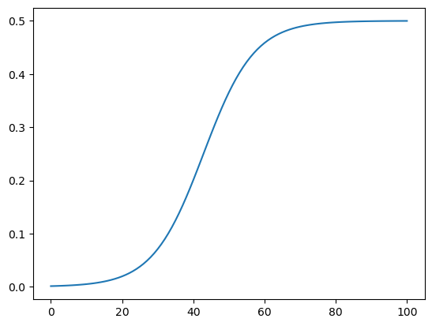

path = untar_data(URLs.PETS)
files = get_image_files(path/"images")
def label_func(f): return f[0].isupper()
dls = ImageDataLoaders.from_name_func(path, files, label_func, item_tfms=Resize(64))Prune Callback
Use the pruner in fastai Callback system
Let’s try our PruneCallback on the Pets dataset
We’ll train a vanilla ResNet18 for 5 epochs to have an idea of the expected performance
learn = vision_learner(dls, resnet18, metrics=accuracy)
learn.unfreeze()
learn.fit_one_cycle(5)| epoch | train_loss | valid_loss | accuracy | time |
|---|---|---|---|---|
| 0 | 0.721933 | 0.757932 | 0.822733 | 00:03 |
| 1 | 0.385900 | 0.288203 | 0.876861 | 00:02 |
| 2 | 0.231994 | 0.253768 | 0.907984 | 00:02 |
| 3 | 0.143060 | 0.197871 | 0.919486 | 00:02 |
| 4 | 0.074842 | 0.203348 | 0.920839 | 00:02 |
base_macs, base_params = tp.utils.count_ops_and_params(learn.model, torch.randn(1,3,224,224).to(default_device()))Let’s now try adding to remove some filters in our model
learn = vision_learner(dls, resnet18, metrics=accuracy)
learn.unfreeze()We’ll set the sparsity to 50 (i.e. remove 50% of filters), the context to global (i.e. we remove filters from anywhere in the network), the criteria to large_final (i.e. keep the highest value filters and the schedule to one_cycle (i.e. follow the One-Cycle schedule to remove filters along training).
pr_cb = PruneCallback(sparsity=45, context='global', criteria=large_final, schedule=one_cycle, layer_type=[nn.Conv2d])
learn.fit_one_cycle(10, cbs=pr_cb)Pruning until a sparsity of [45]%| epoch | train_loss | valid_loss | accuracy | time |
|---|---|---|---|---|
| 0 | 0.954276 | 0.466967 | 0.784168 | 00:04 |
| 1 | 0.529151 | 0.317189 | 0.872124 | 00:04 |
| 2 | 0.353457 | 0.278195 | 0.878890 | 00:04 |
| 3 | 0.269315 | 0.354661 | 0.813261 | 00:05 |
| 4 | 0.256616 | 0.253318 | 0.906631 | 00:04 |
| 5 | 0.211965 | 0.234199 | 0.906631 | 00:04 |
| 6 | 0.177008 | 0.189769 | 0.920162 | 00:04 |
| 7 | 0.134881 | 0.183975 | 0.926252 | 00:04 |
| 8 | 0.106858 | 0.178676 | 0.926928 | 00:04 |
| 9 | 0.099854 | 0.175807 | 0.925575 | 00:04 |
Sparsity at the end of epoch 0: [0.45]%
Sparsity at the end of epoch 1: [1.76]%
Sparsity at the end of epoch 2: [6.39]%
Sparsity at the end of epoch 3: [18.07]%
Sparsity at the end of epoch 4: [32.91]%
Sparsity at the end of epoch 5: [41.27]%
Sparsity at the end of epoch 6: [44.03]%
Sparsity at the end of epoch 7: [44.77]%
Sparsity at the end of epoch 8: [44.95]%
Sparsity at the end of epoch 9: [45.0]%
Final Sparsity: [45.0]%pruned_macs, pruned_params = tp.utils.count_ops_and_params(learn.model, torch.randn(1,3,224,224).to(default_device()))We observe that our network has lost 2.5% of accuracy. But how much parameters have we removed and how much compute does that save ?
print(f'The pruned model has {pruned_macs/base_macs:.2f} the compute of original model')The pruned model has 0.75 the compute of original modelprint(f'The pruned model has {pruned_params/base_params:.2f} the parameters of original model')The pruned model has 0.26 the parameters of original modelSo at the price of a slight decrease in accuracy, we now have a model that is 5x smaller and requires 1.5x fewer compute.
from fastai.vision.all import *
from fastai.callback.all import *
from fasterai.prune.all import *
from fasterai.core.criteria import *
import torch_pruning as tp
from torch_pruning.pruner import function
import torch_pruning as tp
import timm
import torch
import torch.nn as nn
import torch.nn.functional as Fdef get_dls(size, bs):
path = URLs.IMAGENETTE_160
source = untar_data(path)
blocks=(ImageBlock, CategoryBlock)
tfms = [RandomResizedCrop(size, min_scale=0.35), FlipItem(0.5)]
batch_tfms = [Normalize.from_stats(*imagenet_stats)]
csv_file = 'noisy_imagenette.csv'
inp = pd.read_csv(source/csv_file)
dblock = DataBlock(blocks=blocks,
splitter=ColSplitter(),
get_x=ColReader('path', pref=source),
get_y=ColReader(f'noisy_labels_0'),
item_tfms=tfms,
batch_tfms=batch_tfms)
return dblock.dataloaders(inp, path=source, bs=bs)model = timm.create_model('resnet18', pretrained=True, no_jit=True).eval()
dls = get_dls(model.default_cfg['input_size'][2], 16)
learn = Learner(dls, model, metrics = [accuracy])learn.fit_one_cycle(2, 1e-3)| epoch | train_loss | valid_loss | accuracy | time |
|---|---|---|---|---|
| 0 | 0.413728 | 0.297917 | 0.908790 | 00:18 |
| 1 | 0.276229 | 0.151135 | 0.952611 | 00:15 |
pr_cb = PruneCallback(sparsity=15, context='global', criteria=large_final, schedule=one_cycle, layer_type=[nn.Conv2d])
learn.fit_one_cycle(5, 1e-4, cbs=pr_cb)Pruning until a sparsity of [15]%| epoch | train_loss | valid_loss | accuracy | time |
|---|---|---|---|---|
| 0 | 0.229940 | 0.149480 | 0.954140 | 00:22 |
| 1 | 0.284875 | 0.233207 | 0.931720 | 00:23 |
| 2 | 0.514571 | 0.384040 | 0.893503 | 00:23 |
| 3 | 0.489109 | 0.383850 | 0.891720 | 00:21 |
| 4 | 0.521241 | 0.386732 | 0.892739 | 00:21 |
Sparsity at the end of epoch 0: [0.59]%
Sparsity at the end of epoch 1: [6.02]%
Sparsity at the end of epoch 2: [13.76]%
Sparsity at the end of epoch 3: [14.92]%
Sparsity at the end of epoch 4: [15.0]%
Final Sparsity: [15.0]%learn.modelResNet(
(conv1): Conv2d(3, 54, kernel_size=(7, 7), stride=(2, 2), padding=(3, 3), bias=False)
(bn1): BatchNorm2d(54, eps=1e-05, momentum=0.1, affine=True, track_running_stats=True)
(act1): ReLU(inplace=True)
(maxpool): MaxPool2d(kernel_size=3, stride=2, padding=1, dilation=1, ceil_mode=False)
(layer1): Sequential(
(0): BasicBlock(
(conv1): Conv2d(54, 54, kernel_size=(3, 3), stride=(1, 1), padding=(1, 1), bias=False)
(bn1): BatchNorm2d(54, eps=1e-05, momentum=0.1, affine=True, track_running_stats=True)
(drop_block): Identity()
(act1): ReLU(inplace=True)
(aa): Identity()
(conv2): Conv2d(54, 54, kernel_size=(3, 3), stride=(1, 1), padding=(1, 1), bias=False)
(bn2): BatchNorm2d(54, eps=1e-05, momentum=0.1, affine=True, track_running_stats=True)
(act2): ReLU(inplace=True)
)
(1): BasicBlock(
(conv1): Conv2d(54, 54, kernel_size=(3, 3), stride=(1, 1), padding=(1, 1), bias=False)
(bn1): BatchNorm2d(54, eps=1e-05, momentum=0.1, affine=True, track_running_stats=True)
(drop_block): Identity()
(act1): ReLU(inplace=True)
(aa): Identity()
(conv2): Conv2d(54, 54, kernel_size=(3, 3), stride=(1, 1), padding=(1, 1), bias=False)
(bn2): BatchNorm2d(54, eps=1e-05, momentum=0.1, affine=True, track_running_stats=True)
(act2): ReLU(inplace=True)
)
)
(layer2): Sequential(
(0): BasicBlock(
(conv1): Conv2d(54, 108, kernel_size=(3, 3), stride=(2, 2), padding=(1, 1), bias=False)
(bn1): BatchNorm2d(108, eps=1e-05, momentum=0.1, affine=True, track_running_stats=True)
(drop_block): Identity()
(act1): ReLU(inplace=True)
(aa): Identity()
(conv2): Conv2d(108, 108, kernel_size=(3, 3), stride=(1, 1), padding=(1, 1), bias=False)
(bn2): BatchNorm2d(108, eps=1e-05, momentum=0.1, affine=True, track_running_stats=True)
(act2): ReLU(inplace=True)
(downsample): Sequential(
(0): Conv2d(54, 108, kernel_size=(1, 1), stride=(2, 2), bias=False)
(1): BatchNorm2d(108, eps=1e-05, momentum=0.1, affine=True, track_running_stats=True)
)
)
(1): BasicBlock(
(conv1): Conv2d(108, 108, kernel_size=(3, 3), stride=(1, 1), padding=(1, 1), bias=False)
(bn1): BatchNorm2d(108, eps=1e-05, momentum=0.1, affine=True, track_running_stats=True)
(drop_block): Identity()
(act1): ReLU(inplace=True)
(aa): Identity()
(conv2): Conv2d(108, 108, kernel_size=(3, 3), stride=(1, 1), padding=(1, 1), bias=False)
(bn2): BatchNorm2d(108, eps=1e-05, momentum=0.1, affine=True, track_running_stats=True)
(act2): ReLU(inplace=True)
)
)
(layer3): Sequential(
(0): BasicBlock(
(conv1): Conv2d(108, 217, kernel_size=(3, 3), stride=(2, 2), padding=(1, 1), bias=False)
(bn1): BatchNorm2d(217, eps=1e-05, momentum=0.1, affine=True, track_running_stats=True)
(drop_block): Identity()
(act1): ReLU(inplace=True)
(aa): Identity()
(conv2): Conv2d(217, 217, kernel_size=(3, 3), stride=(1, 1), padding=(1, 1), bias=False)
(bn2): BatchNorm2d(217, eps=1e-05, momentum=0.1, affine=True, track_running_stats=True)
(act2): ReLU(inplace=True)
(downsample): Sequential(
(0): Conv2d(108, 217, kernel_size=(1, 1), stride=(2, 2), bias=False)
(1): BatchNorm2d(217, eps=1e-05, momentum=0.1, affine=True, track_running_stats=True)
)
)
(1): BasicBlock(
(conv1): Conv2d(217, 217, kernel_size=(3, 3), stride=(1, 1), padding=(1, 1), bias=False)
(bn1): BatchNorm2d(217, eps=1e-05, momentum=0.1, affine=True, track_running_stats=True)
(drop_block): Identity()
(act1): ReLU(inplace=True)
(aa): Identity()
(conv2): Conv2d(217, 217, kernel_size=(3, 3), stride=(1, 1), padding=(1, 1), bias=False)
(bn2): BatchNorm2d(217, eps=1e-05, momentum=0.1, affine=True, track_running_stats=True)
(act2): ReLU(inplace=True)
)
)
(layer4): Sequential(
(0): BasicBlock(
(conv1): Conv2d(217, 435, kernel_size=(3, 3), stride=(2, 2), padding=(1, 1), bias=False)
(bn1): BatchNorm2d(435, eps=1e-05, momentum=0.1, affine=True, track_running_stats=True)
(drop_block): Identity()
(act1): ReLU(inplace=True)
(aa): Identity()
(conv2): Conv2d(435, 435, kernel_size=(3, 3), stride=(1, 1), padding=(1, 1), bias=False)
(bn2): BatchNorm2d(435, eps=1e-05, momentum=0.1, affine=True, track_running_stats=True)
(act2): ReLU(inplace=True)
(downsample): Sequential(
(0): Conv2d(217, 435, kernel_size=(1, 1), stride=(2, 2), bias=False)
(1): BatchNorm2d(435, eps=1e-05, momentum=0.1, affine=True, track_running_stats=True)
)
)
(1): BasicBlock(
(conv1): Conv2d(435, 435, kernel_size=(3, 3), stride=(1, 1), padding=(1, 1), bias=False)
(bn1): BatchNorm2d(435, eps=1e-05, momentum=0.1, affine=True, track_running_stats=True)
(drop_block): Identity()
(act1): ReLU(inplace=True)
(aa): Identity()
(conv2): Conv2d(435, 435, kernel_size=(3, 3), stride=(1, 1), padding=(1, 1), bias=False)
(bn2): BatchNorm2d(435, eps=1e-05, momentum=0.1, affine=True, track_running_stats=True)
(act2): ReLU(inplace=True)
)
)
(global_pool): SelectAdaptivePool2d(pool_type=avg, flatten=Flatten(start_dim=1, end_dim=-1))
(fc): Linear(in_features=435, out_features=1000, bias=True)
)dls = get_dls(128, 64)#learn = vision_learner(dls, 'vgg16_bn', metrics = [accuracy])
learn = vision_learner(dls, resnet18, metrics = [accuracy])
learn.unfreeze()ignored_layers = []
num_heads = {}
for m in learn.model.modules():
#if hasattr(m, 'head'): #isinstance(m, nn.Linear) and m.out_features == model.num_classes:
if isinstance(m, nn.Linear) and m.out_features == dls.c:
ignored_layers.append(m)
print("Ignore classifier layer: ", m)
# Attention layers
if hasattr(m, 'num_heads'):
if hasattr(m, 'qkv'):
num_heads[m.qkv] = m.num_heads
print("Attention layer: ", m.qkv, m.num_heads)
elif hasattr(m, 'qkv_proj'):
num_heads[m.qkv_proj] = m.num_headsIgnore classifier layer: Linear(in_features=512, out_features=10, bias=False)def onecycle_scheduler(pruning_ratio_dict, steps, start=0, end=1, α=14, β=6):
return [
sched_onecycle(start, end, i / float(steps), α, β) * pruning_ratio_dict
for i in range(steps + 1)
]
def sched_onecycle(start, end, pos, α=14, β=6):
out = (1 + np.exp(-α + β)) / (1 + np.exp((-α * pos) + β))
return start + (end - start) * outclass PruneCallback(Callback):
def __init__(self, pruning_ratio, schedule, criteria, ignored_layers, *args, **kwargs):
store_attr()
self.sparsity_levels = []
self.extra_args = args
self.extra_kwargs = kwargs
def before_fit(self):
n_batches_per_epoch = len(self.learn.dls.train)
total_training_steps = n_batches_per_epoch * self.learn.n_epoch
self.total_training_steps = total_training_steps
self.example_inputs, _ = self.learn.dls.one_batch()
self.sparsity_levels = self.schedule(self.pruning_ratio, total_training_steps)
self.pruner = tp.pruner.MetaPruner(
self.learn.model,
example_inputs= torch.randn(self.example_inputs.shape).to('cuda:0'),
importance=self.criteria,
pruning_ratio=self.pruning_ratio,
ignored_layers=self.ignored_layers,
iterative_steps= self.total_training_steps,
iterative_pruning_ratio_scheduler=self.schedule,
#global_pruning=self.context,
*self.extra_args,
**self.extra_kwargs
)
def before_step(self):
if self.training:
self.pruner.step()
#for g in self.pruner.step(interactive=True):
# g.prune()
for m in learn.model.modules():
# Attention layers
if hasattr(m, 'num_heads'):
if hasattr(m, 'qkv'):
m.num_heads = num_heads[m.qkv]
m.head_dim = m.qkv.out_features // (3 * m.num_heads)
elif hasattr(m, 'qkv_proj'):
m.num_heads = num_heads[m.qqkv_projkv]
m.head_dim = m.qkv_proj.out_features // (3 * m.num_heads)
def after_epoch(self):
completed_steps = (self.epoch + 1) * len(self.learn.dls.train)
current_sparsity = self.sparsity_levels[completed_steps - 1]
print(f'Sparsity at the end of epoch {self.epoch}: {current_sparsity*100:.2f}%')learn.fit_one_cycle(5, 1e-3)
pr_cb = PruneCallback(sparsity=25, context='global', criteria=large_final, schedule=one_cycle, layer_type=[nn.Conv2d])
learn.fit_one_cycle(25, 1e-4, cbs=pr_cb)| epoch | train_loss | valid_loss | accuracy | time |
|---|---|---|---|---|
| 0 | 0.637625 | 0.910680 | 0.750318 | 00:05 |
| 1 | 0.586441 | 0.592798 | 0.808917 | 00:04 |
| 2 | 0.452558 | 0.374738 | 0.885605 | 00:04 |
| 3 | 0.295364 | 0.246037 | 0.920255 | 00:05 |
| 4 | 0.199567 | 0.208119 | 0.932229 | 00:04 |
Pruning until a sparsity of [25]%| epoch | train_loss | valid_loss | accuracy | time |
|---|---|---|---|---|
| 0 | 0.170139 | 0.206207 | 0.932229 | 00:05 |
| 1 | 0.179607 | 0.202834 | 0.935032 | 00:05 |
| 2 | 0.160217 | 0.197775 | 0.935796 | 00:06 |
| 3 | 0.142491 | 0.198794 | 0.934522 | 00:05 |
| 4 | 0.148887 | 0.193478 | 0.937325 | 00:05 |
| 5 | 0.139404 | 0.202506 | 0.935287 | 00:05 |
| 6 | 0.107774 | 0.191174 | 0.936051 | 00:05 |
| 7 | 0.124003 | 0.195926 | 0.936561 | 00:05 |
| 8 | 0.104774 | 0.204832 | 0.939618 | 00:05 |
| 9 | 0.104492 | 0.199253 | 0.940127 | 00:06 |
| 10 | 0.107669 | 0.216466 | 0.938089 | 00:05 |
| 11 | 0.158344 | 0.293506 | 0.912102 | 00:05 |
| 12 | 0.683745 | 0.539997 | 0.847134 | 00:05 |
| 13 | 0.587960 | 0.428774 | 0.882803 | 00:05 |
| 14 | 0.473369 | 0.369352 | 0.897325 | 00:05 |
| 15 | 0.445480 | 0.354868 | 0.899873 | 00:05 |
| 16 | 0.418988 | 0.341302 | 0.898599 | 00:05 |
| 17 | 0.377615 | 0.334188 | 0.903439 | 00:05 |
| 18 | 0.357335 | 0.327829 | 0.905478 | 00:05 |
| 19 | 0.352266 | 0.325857 | 0.902420 | 00:05 |
| 20 | 0.377825 | 0.318530 | 0.907006 | 00:05 |
| 21 | 0.364642 | 0.310725 | 0.905478 | 00:05 |
| 22 | 0.346205 | 0.314999 | 0.906752 | 00:05 |
| 23 | 0.347462 | 0.310686 | 0.909554 | 00:05 |
| 24 | 0.346190 | 0.309073 | 0.908535 | 00:05 |
Sparsity at the end of epoch 0: [0.11]%
Sparsity at the end of epoch 1: [0.19]%
Sparsity at the end of epoch 2: [0.33]%
Sparsity at the end of epoch 3: [0.57]%
Sparsity at the end of epoch 4: [0.98]%
Sparsity at the end of epoch 5: [1.67]%
Sparsity at the end of epoch 6: [2.78]%
Sparsity at the end of epoch 7: [4.49]%
Sparsity at the end of epoch 8: [6.92]%
Sparsity at the end of epoch 9: [10.04]%
Sparsity at the end of epoch 10: [13.5]%
Sparsity at the end of epoch 11: [16.82]%
Sparsity at the end of epoch 12: [19.57]%
Sparsity at the end of epoch 13: [21.58]%
Sparsity at the end of epoch 14: [22.93]%
Sparsity at the end of epoch 15: [23.78]%
Sparsity at the end of epoch 16: [24.29]%
Sparsity at the end of epoch 17: [24.59]%
Sparsity at the end of epoch 18: [24.77]%
Sparsity at the end of epoch 19: [24.87]%
Sparsity at the end of epoch 20: [24.93]%
Sparsity at the end of epoch 21: [24.96]%
Sparsity at the end of epoch 22: [24.98]%
Sparsity at the end of epoch 23: [24.99]%
Sparsity at the end of epoch 24: [25.0]%
Final Sparsity: [25.0]%learn.modelSequential(
(0): Sequential(
(0): Conv2d(3, 64, kernel_size=(7, 7), stride=(2, 2), padding=(3, 3), bias=False)
(1): BatchNorm2d(64, eps=1e-05, momentum=0.1, affine=True, track_running_stats=True)
(2): ReLU(inplace=True)
(3): MaxPool2d(kernel_size=3, stride=2, padding=1, dilation=1, ceil_mode=False)
(4): Sequential(
(0): BasicBlock(
(conv1): Conv2d(64, 64, kernel_size=(3, 3), stride=(1, 1), padding=(1, 1), bias=False)
(bn1): BatchNorm2d(64, eps=1e-05, momentum=0.1, affine=True, track_running_stats=True)
(relu): ReLU(inplace=True)
(conv2): Conv2d(64, 64, kernel_size=(3, 3), stride=(1, 1), padding=(1, 1), bias=False)
(bn2): BatchNorm2d(64, eps=1e-05, momentum=0.1, affine=True, track_running_stats=True)
)
(1): BasicBlock(
(conv1): Conv2d(64, 64, kernel_size=(3, 3), stride=(1, 1), padding=(1, 1), bias=False)
(bn1): BatchNorm2d(64, eps=1e-05, momentum=0.1, affine=True, track_running_stats=True)
(relu): ReLU(inplace=True)
(conv2): Conv2d(64, 64, kernel_size=(3, 3), stride=(1, 1), padding=(1, 1), bias=False)
(bn2): BatchNorm2d(64, eps=1e-05, momentum=0.1, affine=True, track_running_stats=True)
)
)
(5): Sequential(
(0): BasicBlock(
(conv1): Conv2d(64, 128, kernel_size=(3, 3), stride=(2, 2), padding=(1, 1), bias=False)
(bn1): BatchNorm2d(128, eps=1e-05, momentum=0.1, affine=True, track_running_stats=True)
(relu): ReLU(inplace=True)
(conv2): Conv2d(128, 128, kernel_size=(3, 3), stride=(1, 1), padding=(1, 1), bias=False)
(bn2): BatchNorm2d(128, eps=1e-05, momentum=0.1, affine=True, track_running_stats=True)
(downsample): Sequential(
(0): Conv2d(64, 128, kernel_size=(1, 1), stride=(2, 2), bias=False)
(1): BatchNorm2d(128, eps=1e-05, momentum=0.1, affine=True, track_running_stats=True)
)
)
(1): BasicBlock(
(conv1): Conv2d(128, 128, kernel_size=(3, 3), stride=(1, 1), padding=(1, 1), bias=False)
(bn1): BatchNorm2d(128, eps=1e-05, momentum=0.1, affine=True, track_running_stats=True)
(relu): ReLU(inplace=True)
(conv2): Conv2d(128, 128, kernel_size=(3, 3), stride=(1, 1), padding=(1, 1), bias=False)
(bn2): BatchNorm2d(128, eps=1e-05, momentum=0.1, affine=True, track_running_stats=True)
)
)
(6): Sequential(
(0): BasicBlock(
(conv1): Conv2d(128, 256, kernel_size=(3, 3), stride=(2, 2), padding=(1, 1), bias=False)
(bn1): BatchNorm2d(256, eps=1e-05, momentum=0.1, affine=True, track_running_stats=True)
(relu): ReLU(inplace=True)
(conv2): Conv2d(256, 256, kernel_size=(3, 3), stride=(1, 1), padding=(1, 1), bias=False)
(bn2): BatchNorm2d(256, eps=1e-05, momentum=0.1, affine=True, track_running_stats=True)
(downsample): Sequential(
(0): Conv2d(128, 256, kernel_size=(1, 1), stride=(2, 2), bias=False)
(1): BatchNorm2d(256, eps=1e-05, momentum=0.1, affine=True, track_running_stats=True)
)
)
(1): BasicBlock(
(conv1): Conv2d(256, 251, kernel_size=(3, 3), stride=(1, 1), padding=(1, 1), bias=False)
(bn1): BatchNorm2d(251, eps=1e-05, momentum=0.1, affine=True, track_running_stats=True)
(relu): ReLU(inplace=True)
(conv2): Conv2d(251, 256, kernel_size=(3, 3), stride=(1, 1), padding=(1, 1), bias=False)
(bn2): BatchNorm2d(256, eps=1e-05, momentum=0.1, affine=True, track_running_stats=True)
)
)
(7): Sequential(
(0): BasicBlock(
(conv1): Conv2d(256, 384, kernel_size=(3, 3), stride=(2, 2), padding=(1, 1), bias=False)
(bn1): BatchNorm2d(384, eps=1e-05, momentum=0.1, affine=True, track_running_stats=True)
(relu): ReLU(inplace=True)
(conv2): Conv2d(384, 434, kernel_size=(3, 3), stride=(1, 1), padding=(1, 1), bias=False)
(bn2): BatchNorm2d(434, eps=1e-05, momentum=0.1, affine=True, track_running_stats=True)
(downsample): Sequential(
(0): Conv2d(256, 434, kernel_size=(1, 1), stride=(2, 2), bias=False)
(1): BatchNorm2d(434, eps=1e-05, momentum=0.1, affine=True, track_running_stats=True)
)
)
(1): BasicBlock(
(conv1): Conv2d(434, 3, kernel_size=(3, 3), stride=(1, 1), padding=(1, 1), bias=False)
(bn1): BatchNorm2d(3, eps=1e-05, momentum=0.1, affine=True, track_running_stats=True)
(relu): ReLU(inplace=True)
(conv2): Conv2d(3, 434, kernel_size=(3, 3), stride=(1, 1), padding=(1, 1), bias=False)
(bn2): BatchNorm2d(434, eps=1e-05, momentum=0.1, affine=True, track_running_stats=True)
)
)
)
(1): Sequential(
(0): AdaptiveConcatPool2d(
(ap): AdaptiveAvgPool2d(output_size=1)
(mp): AdaptiveMaxPool2d(output_size=1)
)
(1): fastai.layers.Flatten(full=False)
(2): BatchNorm1d(868, eps=1e-05, momentum=0.1, affine=True, track_running_stats=True)
(3): Dropout(p=0.25, inplace=False)
(4): Linear(in_features=868, out_features=512, bias=False)
(5): ReLU(inplace=True)
(6): BatchNorm1d(512, eps=1e-05, momentum=0.1, affine=True, track_running_stats=True)
(7): Dropout(p=0.5, inplace=False)
(8): Linear(in_features=512, out_features=10, bias=False)
)
)learn = vision_learner(dls, resnet18, metrics = [accuracy])
print(learn.model)
print(sum(p.numel() for p in learn.model.parameters() if p.requires_grad))Sequential(
(0): Sequential(
(0): Conv2d(3, 64, kernel_size=(7, 7), stride=(2, 2), padding=(3, 3), bias=False)
(1): BatchNorm2d(64, eps=1e-05, momentum=0.1, affine=True, track_running_stats=True)
(2): ReLU(inplace=True)
(3): MaxPool2d(kernel_size=3, stride=2, padding=1, dilation=1, ceil_mode=False)
(4): Sequential(
(0): BasicBlock(
(conv1): Conv2d(64, 64, kernel_size=(3, 3), stride=(1, 1), padding=(1, 1), bias=False)
(bn1): BatchNorm2d(64, eps=1e-05, momentum=0.1, affine=True, track_running_stats=True)
(relu): ReLU(inplace=True)
(conv2): Conv2d(64, 64, kernel_size=(3, 3), stride=(1, 1), padding=(1, 1), bias=False)
(bn2): BatchNorm2d(64, eps=1e-05, momentum=0.1, affine=True, track_running_stats=True)
)
(1): BasicBlock(
(conv1): Conv2d(64, 64, kernel_size=(3, 3), stride=(1, 1), padding=(1, 1), bias=False)
(bn1): BatchNorm2d(64, eps=1e-05, momentum=0.1, affine=True, track_running_stats=True)
(relu): ReLU(inplace=True)
(conv2): Conv2d(64, 64, kernel_size=(3, 3), stride=(1, 1), padding=(1, 1), bias=False)
(bn2): BatchNorm2d(64, eps=1e-05, momentum=0.1, affine=True, track_running_stats=True)
)
)
(5): Sequential(
(0): BasicBlock(
(conv1): Conv2d(64, 128, kernel_size=(3, 3), stride=(2, 2), padding=(1, 1), bias=False)
(bn1): BatchNorm2d(128, eps=1e-05, momentum=0.1, affine=True, track_running_stats=True)
(relu): ReLU(inplace=True)
(conv2): Conv2d(128, 128, kernel_size=(3, 3), stride=(1, 1), padding=(1, 1), bias=False)
(bn2): BatchNorm2d(128, eps=1e-05, momentum=0.1, affine=True, track_running_stats=True)
(downsample): Sequential(
(0): Conv2d(64, 128, kernel_size=(1, 1), stride=(2, 2), bias=False)
(1): BatchNorm2d(128, eps=1e-05, momentum=0.1, affine=True, track_running_stats=True)
)
)
(1): BasicBlock(
(conv1): Conv2d(128, 128, kernel_size=(3, 3), stride=(1, 1), padding=(1, 1), bias=False)
(bn1): BatchNorm2d(128, eps=1e-05, momentum=0.1, affine=True, track_running_stats=True)
(relu): ReLU(inplace=True)
(conv2): Conv2d(128, 128, kernel_size=(3, 3), stride=(1, 1), padding=(1, 1), bias=False)
(bn2): BatchNorm2d(128, eps=1e-05, momentum=0.1, affine=True, track_running_stats=True)
)
)
(6): Sequential(
(0): BasicBlock(
(conv1): Conv2d(128, 256, kernel_size=(3, 3), stride=(2, 2), padding=(1, 1), bias=False)
(bn1): BatchNorm2d(256, eps=1e-05, momentum=0.1, affine=True, track_running_stats=True)
(relu): ReLU(inplace=True)
(conv2): Conv2d(256, 256, kernel_size=(3, 3), stride=(1, 1), padding=(1, 1), bias=False)
(bn2): BatchNorm2d(256, eps=1e-05, momentum=0.1, affine=True, track_running_stats=True)
(downsample): Sequential(
(0): Conv2d(128, 256, kernel_size=(1, 1), stride=(2, 2), bias=False)
(1): BatchNorm2d(256, eps=1e-05, momentum=0.1, affine=True, track_running_stats=True)
)
)
(1): BasicBlock(
(conv1): Conv2d(256, 256, kernel_size=(3, 3), stride=(1, 1), padding=(1, 1), bias=False)
(bn1): BatchNorm2d(256, eps=1e-05, momentum=0.1, affine=True, track_running_stats=True)
(relu): ReLU(inplace=True)
(conv2): Conv2d(256, 256, kernel_size=(3, 3), stride=(1, 1), padding=(1, 1), bias=False)
(bn2): BatchNorm2d(256, eps=1e-05, momentum=0.1, affine=True, track_running_stats=True)
)
)
(7): Sequential(
(0): BasicBlock(
(conv1): Conv2d(256, 512, kernel_size=(3, 3), stride=(2, 2), padding=(1, 1), bias=False)
(bn1): BatchNorm2d(512, eps=1e-05, momentum=0.1, affine=True, track_running_stats=True)
(relu): ReLU(inplace=True)
(conv2): Conv2d(512, 512, kernel_size=(3, 3), stride=(1, 1), padding=(1, 1), bias=False)
(bn2): BatchNorm2d(512, eps=1e-05, momentum=0.1, affine=True, track_running_stats=True)
(downsample): Sequential(
(0): Conv2d(256, 512, kernel_size=(1, 1), stride=(2, 2), bias=False)
(1): BatchNorm2d(512, eps=1e-05, momentum=0.1, affine=True, track_running_stats=True)
)
)
(1): BasicBlock(
(conv1): Conv2d(512, 512, kernel_size=(3, 3), stride=(1, 1), padding=(1, 1), bias=False)
(bn1): BatchNorm2d(512, eps=1e-05, momentum=0.1, affine=True, track_running_stats=True)
(relu): ReLU(inplace=True)
(conv2): Conv2d(512, 512, kernel_size=(3, 3), stride=(1, 1), padding=(1, 1), bias=False)
(bn2): BatchNorm2d(512, eps=1e-05, momentum=0.1, affine=True, track_running_stats=True)
)
)
)
(1): Sequential(
(0): AdaptiveConcatPool2d(
(ap): AdaptiveAvgPool2d(output_size=1)
(mp): AdaptiveMaxPool2d(output_size=1)
)
(1): fastai.layers.Flatten(full=False)
(2): BatchNorm1d(1024, eps=1e-05, momentum=0.1, affine=True, track_running_stats=True)
(3): Dropout(p=0.25, inplace=False)
(4): Linear(in_features=1024, out_features=512, bias=False)
(5): ReLU(inplace=True)
(6): BatchNorm1d(512, eps=1e-05, momentum=0.1, affine=True, track_running_stats=True)
(7): Dropout(p=0.5, inplace=False)
(8): Linear(in_features=512, out_features=10, bias=False)
)
)
542080learn = vision_learner(dls, 'resnet18', metrics = [accuracy])
print(learn.model)
print(sum(p.numel() for p in learn.model.parameters() if p.requires_grad))Sequential(
(0): TimmBody(
(model): ResNet(
(conv1): Conv2d(3, 64, kernel_size=(7, 7), stride=(2, 2), padding=(3, 3), bias=False)
(bn1): BatchNorm2d(64, eps=1e-05, momentum=0.1, affine=True, track_running_stats=True)
(act1): ReLU(inplace=True)
(maxpool): MaxPool2d(kernel_size=3, stride=2, padding=1, dilation=1, ceil_mode=False)
(layer1): Sequential(
(0): BasicBlock(
(conv1): Conv2d(64, 64, kernel_size=(3, 3), stride=(1, 1), padding=(1, 1), bias=False)
(bn1): BatchNorm2d(64, eps=1e-05, momentum=0.1, affine=True, track_running_stats=True)
(drop_block): Identity()
(act1): ReLU(inplace=True)
(aa): Identity()
(conv2): Conv2d(64, 64, kernel_size=(3, 3), stride=(1, 1), padding=(1, 1), bias=False)
(bn2): BatchNorm2d(64, eps=1e-05, momentum=0.1, affine=True, track_running_stats=True)
(act2): ReLU(inplace=True)
)
(1): BasicBlock(
(conv1): Conv2d(64, 64, kernel_size=(3, 3), stride=(1, 1), padding=(1, 1), bias=False)
(bn1): BatchNorm2d(64, eps=1e-05, momentum=0.1, affine=True, track_running_stats=True)
(drop_block): Identity()
(act1): ReLU(inplace=True)
(aa): Identity()
(conv2): Conv2d(64, 64, kernel_size=(3, 3), stride=(1, 1), padding=(1, 1), bias=False)
(bn2): BatchNorm2d(64, eps=1e-05, momentum=0.1, affine=True, track_running_stats=True)
(act2): ReLU(inplace=True)
)
)
(layer2): Sequential(
(0): BasicBlock(
(conv1): Conv2d(64, 128, kernel_size=(3, 3), stride=(2, 2), padding=(1, 1), bias=False)
(bn1): BatchNorm2d(128, eps=1e-05, momentum=0.1, affine=True, track_running_stats=True)
(drop_block): Identity()
(act1): ReLU(inplace=True)
(aa): Identity()
(conv2): Conv2d(128, 128, kernel_size=(3, 3), stride=(1, 1), padding=(1, 1), bias=False)
(bn2): BatchNorm2d(128, eps=1e-05, momentum=0.1, affine=True, track_running_stats=True)
(act2): ReLU(inplace=True)
(downsample): Sequential(
(0): Conv2d(64, 128, kernel_size=(1, 1), stride=(2, 2), bias=False)
(1): BatchNorm2d(128, eps=1e-05, momentum=0.1, affine=True, track_running_stats=True)
)
)
(1): BasicBlock(
(conv1): Conv2d(128, 128, kernel_size=(3, 3), stride=(1, 1), padding=(1, 1), bias=False)
(bn1): BatchNorm2d(128, eps=1e-05, momentum=0.1, affine=True, track_running_stats=True)
(drop_block): Identity()
(act1): ReLU(inplace=True)
(aa): Identity()
(conv2): Conv2d(128, 128, kernel_size=(3, 3), stride=(1, 1), padding=(1, 1), bias=False)
(bn2): BatchNorm2d(128, eps=1e-05, momentum=0.1, affine=True, track_running_stats=True)
(act2): ReLU(inplace=True)
)
)
(layer3): Sequential(
(0): BasicBlock(
(conv1): Conv2d(128, 256, kernel_size=(3, 3), stride=(2, 2), padding=(1, 1), bias=False)
(bn1): BatchNorm2d(256, eps=1e-05, momentum=0.1, affine=True, track_running_stats=True)
(drop_block): Identity()
(act1): ReLU(inplace=True)
(aa): Identity()
(conv2): Conv2d(256, 256, kernel_size=(3, 3), stride=(1, 1), padding=(1, 1), bias=False)
(bn2): BatchNorm2d(256, eps=1e-05, momentum=0.1, affine=True, track_running_stats=True)
(act2): ReLU(inplace=True)
(downsample): Sequential(
(0): Conv2d(128, 256, kernel_size=(1, 1), stride=(2, 2), bias=False)
(1): BatchNorm2d(256, eps=1e-05, momentum=0.1, affine=True, track_running_stats=True)
)
)
(1): BasicBlock(
(conv1): Conv2d(256, 256, kernel_size=(3, 3), stride=(1, 1), padding=(1, 1), bias=False)
(bn1): BatchNorm2d(256, eps=1e-05, momentum=0.1, affine=True, track_running_stats=True)
(drop_block): Identity()
(act1): ReLU(inplace=True)
(aa): Identity()
(conv2): Conv2d(256, 256, kernel_size=(3, 3), stride=(1, 1), padding=(1, 1), bias=False)
(bn2): BatchNorm2d(256, eps=1e-05, momentum=0.1, affine=True, track_running_stats=True)
(act2): ReLU(inplace=True)
)
)
(layer4): Sequential(
(0): BasicBlock(
(conv1): Conv2d(256, 512, kernel_size=(3, 3), stride=(2, 2), padding=(1, 1), bias=False)
(bn1): BatchNorm2d(512, eps=1e-05, momentum=0.1, affine=True, track_running_stats=True)
(drop_block): Identity()
(act1): ReLU(inplace=True)
(aa): Identity()
(conv2): Conv2d(512, 512, kernel_size=(3, 3), stride=(1, 1), padding=(1, 1), bias=False)
(bn2): BatchNorm2d(512, eps=1e-05, momentum=0.1, affine=True, track_running_stats=True)
(act2): ReLU(inplace=True)
(downsample): Sequential(
(0): Conv2d(256, 512, kernel_size=(1, 1), stride=(2, 2), bias=False)
(1): BatchNorm2d(512, eps=1e-05, momentum=0.1, affine=True, track_running_stats=True)
)
)
(1): BasicBlock(
(conv1): Conv2d(512, 512, kernel_size=(3, 3), stride=(1, 1), padding=(1, 1), bias=False)
(bn1): BatchNorm2d(512, eps=1e-05, momentum=0.1, affine=True, track_running_stats=True)
(drop_block): Identity()
(act1): ReLU(inplace=True)
(aa): Identity()
(conv2): Conv2d(512, 512, kernel_size=(3, 3), stride=(1, 1), padding=(1, 1), bias=False)
(bn2): BatchNorm2d(512, eps=1e-05, momentum=0.1, affine=True, track_running_stats=True)
(act2): ReLU(inplace=True)
)
)
(global_pool): SelectAdaptivePool2d(pool_type=avg, flatten=Flatten(start_dim=1, end_dim=-1))
(fc): Identity()
)
)
(1): Sequential(
(0): AdaptiveConcatPool2d(
(ap): AdaptiveAvgPool2d(output_size=1)
(mp): AdaptiveMaxPool2d(output_size=1)
)
(1): fastai.layers.Flatten(full=False)
(2): BatchNorm1d(1024, eps=1e-05, momentum=0.1, affine=True, track_running_stats=True)
(3): Dropout(p=0.25, inplace=False)
(4): Linear(in_features=1024, out_features=512, bias=False)
(5): ReLU(inplace=True)
(6): BatchNorm1d(512, eps=1e-05, momentum=0.1, affine=True, track_running_stats=True)
(7): Dropout(p=0.5, inplace=False)
(8): Linear(in_features=512, out_features=10, bias=False)
)
)
542080timm.list_models()['bat_resnext26ts',
'beit_base_patch16_224',
'beit_base_patch16_384',
'beit_large_patch16_224',
'beit_large_patch16_384',
'beit_large_patch16_512',
'beitv2_base_patch16_224',
'beitv2_large_patch16_224',
'botnet26t_256',
'botnet50ts_256',
'caformer_b36',
'caformer_m36',
'caformer_s18',
'caformer_s36',
'cait_m36_384',
'cait_m48_448',
'cait_s24_224',
'cait_s24_384',
'cait_s36_384',
'cait_xs24_384',
'cait_xxs24_224',
'cait_xxs24_384',
'cait_xxs36_224',
'cait_xxs36_384',
'coat_lite_medium',
'coat_lite_medium_384',
'coat_lite_mini',
'coat_lite_small',
'coat_lite_tiny',
'coat_mini',
'coat_small',
'coat_tiny',
'coatnet_0_224',
'coatnet_0_rw_224',
'coatnet_1_224',
'coatnet_1_rw_224',
'coatnet_2_224',
'coatnet_2_rw_224',
'coatnet_3_224',
'coatnet_3_rw_224',
'coatnet_4_224',
'coatnet_5_224',
'coatnet_bn_0_rw_224',
'coatnet_nano_cc_224',
'coatnet_nano_rw_224',
'coatnet_pico_rw_224',
'coatnet_rmlp_0_rw_224',
'coatnet_rmlp_1_rw2_224',
'coatnet_rmlp_1_rw_224',
'coatnet_rmlp_2_rw_224',
'coatnet_rmlp_2_rw_384',
'coatnet_rmlp_3_rw_224',
'coatnet_rmlp_nano_rw_224',
'coatnext_nano_rw_224',
'convformer_b36',
'convformer_m36',
'convformer_s18',
'convformer_s36',
'convit_base',
'convit_small',
'convit_tiny',
'convmixer_768_32',
'convmixer_1024_20_ks9_p14',
'convmixer_1536_20',
'convnext_atto',
'convnext_atto_ols',
'convnext_base',
'convnext_femto',
'convnext_femto_ols',
'convnext_large',
'convnext_large_mlp',
'convnext_nano',
'convnext_nano_ols',
'convnext_pico',
'convnext_pico_ols',
'convnext_small',
'convnext_tiny',
'convnext_tiny_hnf',
'convnext_xlarge',
'convnext_xxlarge',
'convnextv2_atto',
'convnextv2_base',
'convnextv2_femto',
'convnextv2_huge',
'convnextv2_large',
'convnextv2_nano',
'convnextv2_pico',
'convnextv2_small',
'convnextv2_tiny',
'crossvit_9_240',
'crossvit_9_dagger_240',
'crossvit_15_240',
'crossvit_15_dagger_240',
'crossvit_15_dagger_408',
'crossvit_18_240',
'crossvit_18_dagger_240',
'crossvit_18_dagger_408',
'crossvit_base_240',
'crossvit_small_240',
'crossvit_tiny_240',
'cs3darknet_focus_l',
'cs3darknet_focus_m',
'cs3darknet_focus_s',
'cs3darknet_focus_x',
'cs3darknet_l',
'cs3darknet_m',
'cs3darknet_s',
'cs3darknet_x',
'cs3edgenet_x',
'cs3se_edgenet_x',
'cs3sedarknet_l',
'cs3sedarknet_x',
'cs3sedarknet_xdw',
'cspdarknet53',
'cspresnet50',
'cspresnet50d',
'cspresnet50w',
'cspresnext50',
'darknet17',
'darknet21',
'darknet53',
'darknetaa53',
'davit_base',
'davit_giant',
'davit_huge',
'davit_large',
'davit_small',
'davit_tiny',
'deit3_base_patch16_224',
'deit3_base_patch16_384',
'deit3_huge_patch14_224',
'deit3_large_patch16_224',
'deit3_large_patch16_384',
'deit3_medium_patch16_224',
'deit3_small_patch16_224',
'deit3_small_patch16_384',
'deit_base_distilled_patch16_224',
'deit_base_distilled_patch16_384',
'deit_base_patch16_224',
'deit_base_patch16_384',
'deit_small_distilled_patch16_224',
'deit_small_patch16_224',
'deit_tiny_distilled_patch16_224',
'deit_tiny_patch16_224',
'densenet121',
'densenet161',
'densenet169',
'densenet201',
'densenet264d',
'densenetblur121d',
'dla34',
'dla46_c',
'dla46x_c',
'dla60',
'dla60_res2net',
'dla60_res2next',
'dla60x',
'dla60x_c',
'dla102',
'dla102x',
'dla102x2',
'dla169',
'dm_nfnet_f0',
'dm_nfnet_f1',
'dm_nfnet_f2',
'dm_nfnet_f3',
'dm_nfnet_f4',
'dm_nfnet_f5',
'dm_nfnet_f6',
'dpn48b',
'dpn68',
'dpn68b',
'dpn92',
'dpn98',
'dpn107',
'dpn131',
'eca_botnext26ts_256',
'eca_halonext26ts',
'eca_nfnet_l0',
'eca_nfnet_l1',
'eca_nfnet_l2',
'eca_nfnet_l3',
'eca_resnet33ts',
'eca_resnext26ts',
'eca_vovnet39b',
'ecaresnet26t',
'ecaresnet50d',
'ecaresnet50d_pruned',
'ecaresnet50t',
'ecaresnet101d',
'ecaresnet101d_pruned',
'ecaresnet200d',
'ecaresnet269d',
'ecaresnetlight',
'ecaresnext26t_32x4d',
'ecaresnext50t_32x4d',
'edgenext_base',
'edgenext_small',
'edgenext_small_rw',
'edgenext_x_small',
'edgenext_xx_small',
'efficientformer_l1',
'efficientformer_l3',
'efficientformer_l7',
'efficientformerv2_l',
'efficientformerv2_s0',
'efficientformerv2_s1',
'efficientformerv2_s2',
'efficientnet_b0',
'efficientnet_b0_g8_gn',
'efficientnet_b0_g16_evos',
'efficientnet_b0_gn',
'efficientnet_b1',
'efficientnet_b1_pruned',
'efficientnet_b2',
'efficientnet_b2_pruned',
'efficientnet_b3',
'efficientnet_b3_g8_gn',
'efficientnet_b3_gn',
'efficientnet_b3_pruned',
'efficientnet_b4',
'efficientnet_b5',
'efficientnet_b6',
'efficientnet_b7',
'efficientnet_b8',
'efficientnet_cc_b0_4e',
'efficientnet_cc_b0_8e',
'efficientnet_cc_b1_8e',
'efficientnet_el',
'efficientnet_el_pruned',
'efficientnet_em',
'efficientnet_es',
'efficientnet_es_pruned',
'efficientnet_l2',
'efficientnet_lite0',
'efficientnet_lite1',
'efficientnet_lite2',
'efficientnet_lite3',
'efficientnet_lite4',
'efficientnetv2_l',
'efficientnetv2_m',
'efficientnetv2_rw_m',
'efficientnetv2_rw_s',
'efficientnetv2_rw_t',
'efficientnetv2_s',
'efficientnetv2_xl',
'efficientvit_b0',
'efficientvit_b1',
'efficientvit_b2',
'efficientvit_b3',
'efficientvit_l1',
'efficientvit_l2',
'efficientvit_l3',
'efficientvit_m0',
'efficientvit_m1',
'efficientvit_m2',
'efficientvit_m3',
'efficientvit_m4',
'efficientvit_m5',
'ese_vovnet19b_dw',
'ese_vovnet19b_slim',
'ese_vovnet19b_slim_dw',
'ese_vovnet39b',
'ese_vovnet39b_evos',
'ese_vovnet57b',
'ese_vovnet99b',
'eva02_base_patch14_224',
'eva02_base_patch14_448',
'eva02_base_patch16_clip_224',
'eva02_enormous_patch14_clip_224',
'eva02_large_patch14_224',
'eva02_large_patch14_448',
'eva02_large_patch14_clip_224',
'eva02_large_patch14_clip_336',
'eva02_small_patch14_224',
'eva02_small_patch14_336',
'eva02_tiny_patch14_224',
'eva02_tiny_patch14_336',
'eva_giant_patch14_224',
'eva_giant_patch14_336',
'eva_giant_patch14_560',
'eva_giant_patch14_clip_224',
'eva_large_patch14_196',
'eva_large_patch14_336',
'fastvit_ma36',
'fastvit_s12',
'fastvit_sa12',
'fastvit_sa24',
'fastvit_sa36',
'fastvit_t8',
'fastvit_t12',
'fbnetc_100',
'fbnetv3_b',
'fbnetv3_d',
'fbnetv3_g',
'flexivit_base',
'flexivit_large',
'flexivit_small',
'focalnet_base_lrf',
'focalnet_base_srf',
'focalnet_huge_fl3',
'focalnet_huge_fl4',
'focalnet_large_fl3',
'focalnet_large_fl4',
'focalnet_small_lrf',
'focalnet_small_srf',
'focalnet_tiny_lrf',
'focalnet_tiny_srf',
'focalnet_xlarge_fl3',
'focalnet_xlarge_fl4',
'gc_efficientnetv2_rw_t',
'gcresnet33ts',
'gcresnet50t',
'gcresnext26ts',
'gcresnext50ts',
'gcvit_base',
'gcvit_small',
'gcvit_tiny',
'gcvit_xtiny',
'gcvit_xxtiny',
'gernet_l',
'gernet_m',
'gernet_s',
'ghostnet_050',
'ghostnet_100',
'ghostnet_130',
'ghostnetv2_100',
'ghostnetv2_130',
'ghostnetv2_160',
'gmixer_12_224',
'gmixer_24_224',
'gmlp_b16_224',
'gmlp_s16_224',
'gmlp_ti16_224',
'halo2botnet50ts_256',
'halonet26t',
'halonet50ts',
'halonet_h1',
'haloregnetz_b',
'hardcorenas_a',
'hardcorenas_b',
'hardcorenas_c',
'hardcorenas_d',
'hardcorenas_e',
'hardcorenas_f',
'hgnet_base',
'hgnet_small',
'hgnet_tiny',
'hgnetv2_b0',
'hgnetv2_b1',
'hgnetv2_b2',
'hgnetv2_b3',
'hgnetv2_b4',
'hgnetv2_b5',
'hgnetv2_b6',
'hrnet_w18',
'hrnet_w18_small',
'hrnet_w18_small_v2',
'hrnet_w18_ssld',
'hrnet_w30',
'hrnet_w32',
'hrnet_w40',
'hrnet_w44',
'hrnet_w48',
'hrnet_w48_ssld',
'hrnet_w64',
'inception_next_base',
'inception_next_small',
'inception_next_tiny',
'inception_resnet_v2',
'inception_v3',
'inception_v4',
'lambda_resnet26rpt_256',
'lambda_resnet26t',
'lambda_resnet50ts',
'lamhalobotnet50ts_256',
'lcnet_035',
'lcnet_050',
'lcnet_075',
'lcnet_100',
'lcnet_150',
'legacy_senet154',
'legacy_seresnet18',
'legacy_seresnet34',
'legacy_seresnet50',
'legacy_seresnet101',
'legacy_seresnet152',
'legacy_seresnext26_32x4d',
'legacy_seresnext50_32x4d',
'legacy_seresnext101_32x4d',
'legacy_xception',
'levit_128',
'levit_128s',
'levit_192',
'levit_256',
'levit_256d',
'levit_384',
'levit_384_s8',
'levit_512',
'levit_512_s8',
'levit_512d',
'levit_conv_128',
'levit_conv_128s',
'levit_conv_192',
'levit_conv_256',
'levit_conv_256d',
'levit_conv_384',
'levit_conv_384_s8',
'levit_conv_512',
'levit_conv_512_s8',
'levit_conv_512d',
'maxvit_base_tf_224',
'maxvit_base_tf_384',
'maxvit_base_tf_512',
'maxvit_large_tf_224',
'maxvit_large_tf_384',
'maxvit_large_tf_512',
'maxvit_nano_rw_256',
'maxvit_pico_rw_256',
'maxvit_rmlp_base_rw_224',
'maxvit_rmlp_base_rw_384',
'maxvit_rmlp_nano_rw_256',
'maxvit_rmlp_pico_rw_256',
'maxvit_rmlp_small_rw_224',
'maxvit_rmlp_small_rw_256',
'maxvit_rmlp_tiny_rw_256',
'maxvit_small_tf_224',
'maxvit_small_tf_384',
'maxvit_small_tf_512',
'maxvit_tiny_pm_256',
'maxvit_tiny_rw_224',
'maxvit_tiny_rw_256',
'maxvit_tiny_tf_224',
'maxvit_tiny_tf_384',
'maxvit_tiny_tf_512',
'maxvit_xlarge_tf_224',
'maxvit_xlarge_tf_384',
'maxvit_xlarge_tf_512',
'maxxvit_rmlp_nano_rw_256',
'maxxvit_rmlp_small_rw_256',
'maxxvit_rmlp_tiny_rw_256',
'maxxvitv2_nano_rw_256',
'maxxvitv2_rmlp_base_rw_224',
'maxxvitv2_rmlp_base_rw_384',
'maxxvitv2_rmlp_large_rw_224',
'mixer_b16_224',
'mixer_b32_224',
'mixer_l16_224',
'mixer_l32_224',
'mixer_s16_224',
'mixer_s32_224',
'mixnet_l',
'mixnet_m',
'mixnet_s',
'mixnet_xl',
'mixnet_xxl',
'mnasnet_050',
'mnasnet_075',
'mnasnet_100',
'mnasnet_140',
'mnasnet_small',
'mobilenetv2_035',
'mobilenetv2_050',
'mobilenetv2_075',
'mobilenetv2_100',
'mobilenetv2_110d',
'mobilenetv2_120d',
'mobilenetv2_140',
'mobilenetv3_large_075',
'mobilenetv3_large_100',
'mobilenetv3_rw',
'mobilenetv3_small_050',
'mobilenetv3_small_075',
'mobilenetv3_small_100',
'mobileone_s0',
'mobileone_s1',
'mobileone_s2',
'mobileone_s3',
'mobileone_s4',
'mobilevit_s',
'mobilevit_xs',
'mobilevit_xxs',
'mobilevitv2_050',
'mobilevitv2_075',
'mobilevitv2_100',
'mobilevitv2_125',
'mobilevitv2_150',
'mobilevitv2_175',
'mobilevitv2_200',
'mvitv2_base',
'mvitv2_base_cls',
'mvitv2_huge_cls',
'mvitv2_large',
'mvitv2_large_cls',
'mvitv2_small',
'mvitv2_small_cls',
'mvitv2_tiny',
'nasnetalarge',
'nest_base',
'nest_base_jx',
'nest_small',
'nest_small_jx',
'nest_tiny',
'nest_tiny_jx',
'nextvit_base',
'nextvit_large',
'nextvit_small',
'nf_ecaresnet26',
'nf_ecaresnet50',
'nf_ecaresnet101',
'nf_regnet_b0',
'nf_regnet_b1',
'nf_regnet_b2',
'nf_regnet_b3',
'nf_regnet_b4',
'nf_regnet_b5',
'nf_resnet26',
'nf_resnet50',
'nf_resnet101',
'nf_seresnet26',
'nf_seresnet50',
'nf_seresnet101',
'nfnet_f0',
'nfnet_f1',
'nfnet_f2',
'nfnet_f3',
'nfnet_f4',
'nfnet_f5',
'nfnet_f6',
'nfnet_f7',
'nfnet_l0',
'pit_b_224',
'pit_b_distilled_224',
'pit_s_224',
'pit_s_distilled_224',
'pit_ti_224',
'pit_ti_distilled_224',
'pit_xs_224',
'pit_xs_distilled_224',
'pnasnet5large',
'poolformer_m36',
'poolformer_m48',
'poolformer_s12',
'poolformer_s24',
'poolformer_s36',
'poolformerv2_m36',
'poolformerv2_m48',
'poolformerv2_s12',
'poolformerv2_s24',
'poolformerv2_s36',
'pvt_v2_b0',
'pvt_v2_b1',
'pvt_v2_b2',
'pvt_v2_b2_li',
'pvt_v2_b3',
'pvt_v2_b4',
'pvt_v2_b5',
'regnetv_040',
'regnetv_064',
'regnetx_002',
'regnetx_004',
'regnetx_004_tv',
'regnetx_006',
'regnetx_008',
'regnetx_016',
'regnetx_032',
'regnetx_040',
'regnetx_064',
'regnetx_080',
'regnetx_120',
'regnetx_160',
'regnetx_320',
'regnety_002',
'regnety_004',
'regnety_006',
'regnety_008',
'regnety_008_tv',
'regnety_016',
'regnety_032',
'regnety_040',
'regnety_040_sgn',
'regnety_064',
'regnety_080',
'regnety_080_tv',
'regnety_120',
'regnety_160',
'regnety_320',
'regnety_640',
'regnety_1280',
'regnety_2560',
'regnetz_005',
'regnetz_040',
'regnetz_040_h',
'regnetz_b16',
'regnetz_b16_evos',
'regnetz_c16',
'regnetz_c16_evos',
'regnetz_d8',
'regnetz_d8_evos',
'regnetz_d32',
'regnetz_e8',
'repghostnet_050',
'repghostnet_058',
'repghostnet_080',
'repghostnet_100',
'repghostnet_111',
'repghostnet_130',
'repghostnet_150',
'repghostnet_200',
'repvgg_a0',
'repvgg_a1',
'repvgg_a2',
'repvgg_b0',
'repvgg_b1',
'repvgg_b1g4',
'repvgg_b2',
'repvgg_b2g4',
'repvgg_b3',
'repvgg_b3g4',
'repvgg_d2se',
'repvit_m0_9',
'repvit_m1',
'repvit_m1_0',
'repvit_m1_1',
'repvit_m1_5',
'repvit_m2',
'repvit_m2_3',
'repvit_m3',
'res2net50_14w_8s',
'res2net50_26w_4s',
'res2net50_26w_6s',
'res2net50_26w_8s',
'res2net50_48w_2s',
'res2net50d',
'res2net101_26w_4s',
'res2net101d',
'res2next50',
'resmlp_12_224',
'resmlp_24_224',
'resmlp_36_224',
'resmlp_big_24_224',
'resnest14d',
'resnest26d',
'resnest50d',
'resnest50d_1s4x24d',
'resnest50d_4s2x40d',
'resnest101e',
'resnest200e',
'resnest269e',
'resnet10t',
'resnet14t',
'resnet18',
'resnet18d',
'resnet26',
'resnet26d',
'resnet26t',
'resnet32ts',
'resnet33ts',
'resnet34',
'resnet34d',
'resnet50',
'resnet50_gn',
'resnet50c',
'resnet50d',
'resnet50s',
'resnet50t',
'resnet51q',
'resnet61q',
'resnet101',
'resnet101c',
'resnet101d',
'resnet101s',
'resnet152',
'resnet152c',
'resnet152d',
'resnet152s',
'resnet200',
'resnet200d',
'resnetaa34d',
'resnetaa50',
'resnetaa50d',
'resnetaa101d',
'resnetblur18',
'resnetblur50',
'resnetblur50d',
'resnetblur101d',
'resnetrs50',
'resnetrs101',
'resnetrs152',
'resnetrs200',
'resnetrs270',
'resnetrs350',
'resnetrs420',
'resnetv2_50',
'resnetv2_50d',
'resnetv2_50d_evos',
'resnetv2_50d_frn',
'resnetv2_50d_gn',
'resnetv2_50t',
'resnetv2_50x1_bit',
'resnetv2_50x3_bit',
'resnetv2_101',
'resnetv2_101d',
'resnetv2_101x1_bit',
'resnetv2_101x3_bit',
'resnetv2_152',
'resnetv2_152d',
'resnetv2_152x2_bit',
'resnetv2_152x4_bit',
'resnext26ts',
'resnext50_32x4d',
'resnext50d_32x4d',
'resnext101_32x4d',
'resnext101_32x8d',
'resnext101_32x16d',
'resnext101_32x32d',
'resnext101_64x4d',
'rexnet_100',
'rexnet_130',
'rexnet_150',
'rexnet_200',
'rexnet_300',
'rexnetr_100',
'rexnetr_130',
'rexnetr_150',
'rexnetr_200',
'rexnetr_300',
'samvit_base_patch16',
'samvit_base_patch16_224',
'samvit_huge_patch16',
'samvit_large_patch16',
'sebotnet33ts_256',
'sedarknet21',
'sehalonet33ts',
'selecsls42',
'selecsls42b',
'selecsls60',
'selecsls60b',
'selecsls84',
'semnasnet_050',
'semnasnet_075',
'semnasnet_100',
'semnasnet_140',
'senet154',
'sequencer2d_l',
'sequencer2d_m',
'sequencer2d_s',
'seresnet18',
'seresnet33ts',
'seresnet34',
'seresnet50',
'seresnet50t',
'seresnet101',
'seresnet152',
'seresnet152d',
'seresnet200d',
'seresnet269d',
'seresnetaa50d',
'seresnext26d_32x4d',
'seresnext26t_32x4d',
'seresnext26ts',
'seresnext50_32x4d',
'seresnext101_32x4d',
'seresnext101_32x8d',
'seresnext101_64x4d',
'seresnext101d_32x8d',
'seresnextaa101d_32x8d',
'seresnextaa201d_32x8d',
'skresnet18',
'skresnet34',
'skresnet50',
'skresnet50d',
'skresnext50_32x4d',
'spnasnet_100',
'swin_base_patch4_window7_224',
'swin_base_patch4_window12_384',
'swin_large_patch4_window7_224',
'swin_large_patch4_window12_384',
'swin_s3_base_224',
'swin_s3_small_224',
'swin_s3_tiny_224',
'swin_small_patch4_window7_224',
'swin_tiny_patch4_window7_224',
'swinv2_base_window8_256',
'swinv2_base_window12_192',
'swinv2_base_window12to16_192to256',
'swinv2_base_window12to24_192to384',
'swinv2_base_window16_256',
'swinv2_cr_base_224',
'swinv2_cr_base_384',
'swinv2_cr_base_ns_224',
'swinv2_cr_giant_224',
'swinv2_cr_giant_384',
'swinv2_cr_huge_224',
'swinv2_cr_huge_384',
'swinv2_cr_large_224',
'swinv2_cr_large_384',
'swinv2_cr_small_224',
'swinv2_cr_small_384',
'swinv2_cr_small_ns_224',
'swinv2_cr_small_ns_256',
'swinv2_cr_tiny_224',
'swinv2_cr_tiny_384',
'swinv2_cr_tiny_ns_224',
'swinv2_large_window12_192',
'swinv2_large_window12to16_192to256',
'swinv2_large_window12to24_192to384',
'swinv2_small_window8_256',
'swinv2_small_window16_256',
'swinv2_tiny_window8_256',
'swinv2_tiny_window16_256',
'tf_efficientnet_b0',
'tf_efficientnet_b1',
'tf_efficientnet_b2',
'tf_efficientnet_b3',
'tf_efficientnet_b4',
'tf_efficientnet_b5',
'tf_efficientnet_b6',
'tf_efficientnet_b7',
'tf_efficientnet_b8',
'tf_efficientnet_cc_b0_4e',
'tf_efficientnet_cc_b0_8e',
'tf_efficientnet_cc_b1_8e',
'tf_efficientnet_el',
'tf_efficientnet_em',
'tf_efficientnet_es',
'tf_efficientnet_l2',
'tf_efficientnet_lite0',
'tf_efficientnet_lite1',
'tf_efficientnet_lite2',
'tf_efficientnet_lite3',
'tf_efficientnet_lite4',
'tf_efficientnetv2_b0',
'tf_efficientnetv2_b1',
'tf_efficientnetv2_b2',
'tf_efficientnetv2_b3',
'tf_efficientnetv2_l',
'tf_efficientnetv2_m',
'tf_efficientnetv2_s',
'tf_efficientnetv2_xl',
'tf_mixnet_l',
'tf_mixnet_m',
'tf_mixnet_s',
'tf_mobilenetv3_large_075',
'tf_mobilenetv3_large_100',
'tf_mobilenetv3_large_minimal_100',
'tf_mobilenetv3_small_075',
'tf_mobilenetv3_small_100',
'tf_mobilenetv3_small_minimal_100',
'tiny_vit_5m_224',
'tiny_vit_11m_224',
'tiny_vit_21m_224',
'tiny_vit_21m_384',
'tiny_vit_21m_512',
'tinynet_a',
'tinynet_b',
'tinynet_c',
'tinynet_d',
'tinynet_e',
'tnt_b_patch16_224',
'tnt_s_patch16_224',
'tresnet_l',
'tresnet_m',
'tresnet_v2_l',
'tresnet_xl',
'twins_pcpvt_base',
'twins_pcpvt_large',
'twins_pcpvt_small',
'twins_svt_base',
'twins_svt_large',
'twins_svt_small',
'vgg11',
'vgg11_bn',
'vgg13',
'vgg13_bn',
'vgg16',
'vgg16_bn',
'vgg19',
'vgg19_bn',
'visformer_small',
'visformer_tiny',
'vit_base_patch8_224',
'vit_base_patch14_dinov2',
'vit_base_patch14_reg4_dinov2',
'vit_base_patch16_18x2_224',
'vit_base_patch16_224',
'vit_base_patch16_224_miil',
'vit_base_patch16_384',
'vit_base_patch16_clip_224',
'vit_base_patch16_clip_384',
'vit_base_patch16_clip_quickgelu_224',
'vit_base_patch16_gap_224',
'vit_base_patch16_plus_240',
'vit_base_patch16_reg4_gap_256',
'vit_base_patch16_rpn_224',
'vit_base_patch16_siglip_224',
'vit_base_patch16_siglip_256',
'vit_base_patch16_siglip_384',
'vit_base_patch16_siglip_512',
'vit_base_patch16_xp_224',
'vit_base_patch32_224',
'vit_base_patch32_384',
'vit_base_patch32_clip_224',
'vit_base_patch32_clip_256',
'vit_base_patch32_clip_384',
'vit_base_patch32_clip_448',
'vit_base_patch32_clip_quickgelu_224',
'vit_base_patch32_plus_256',
'vit_base_r26_s32_224',
'vit_base_r50_s16_224',
'vit_base_r50_s16_384',
'vit_base_resnet26d_224',
'vit_base_resnet50d_224',
'vit_giant_patch14_224',
'vit_giant_patch14_clip_224',
'vit_giant_patch14_dinov2',
'vit_giant_patch14_reg4_dinov2',
'vit_giant_patch16_gap_224',
'vit_gigantic_patch14_224',
'vit_gigantic_patch14_clip_224',
'vit_huge_patch14_224',
'vit_huge_patch14_clip_224',
'vit_huge_patch14_clip_336',
'vit_huge_patch14_clip_378',
'vit_huge_patch14_clip_quickgelu_224',
'vit_huge_patch14_clip_quickgelu_378',
'vit_huge_patch14_gap_224',
'vit_huge_patch14_xp_224',
'vit_huge_patch16_gap_448',
'vit_large_patch14_224',
'vit_large_patch14_clip_224',
'vit_large_patch14_clip_336',
'vit_large_patch14_clip_quickgelu_224',
'vit_large_patch14_clip_quickgelu_336',
'vit_large_patch14_dinov2',
'vit_large_patch14_reg4_dinov2',
'vit_large_patch14_xp_224',
'vit_large_patch16_224',
'vit_large_patch16_384',
'vit_large_patch16_siglip_256',
'vit_large_patch16_siglip_384',
'vit_large_patch32_224',
'vit_large_patch32_384',
'vit_large_r50_s32_224',
'vit_large_r50_s32_384',
'vit_medium_patch16_gap_240',
'vit_medium_patch16_gap_256',
'vit_medium_patch16_gap_384',
'vit_medium_patch16_reg4_256',
'vit_medium_patch16_reg4_gap_256',
'vit_relpos_base_patch16_224',
'vit_relpos_base_patch16_cls_224',
'vit_relpos_base_patch16_clsgap_224',
'vit_relpos_base_patch16_plus_240',
'vit_relpos_base_patch16_rpn_224',
'vit_relpos_base_patch32_plus_rpn_256',
'vit_relpos_medium_patch16_224',
'vit_relpos_medium_patch16_cls_224',
'vit_relpos_medium_patch16_rpn_224',
'vit_relpos_small_patch16_224',
'vit_relpos_small_patch16_rpn_224',
'vit_small_patch8_224',
'vit_small_patch14_dinov2',
'vit_small_patch14_reg4_dinov2',
'vit_small_patch16_18x2_224',
'vit_small_patch16_36x1_224',
'vit_small_patch16_224',
'vit_small_patch16_384',
'vit_small_patch32_224',
'vit_small_patch32_384',
'vit_small_r26_s32_224',
'vit_small_r26_s32_384',
'vit_small_resnet26d_224',
'vit_small_resnet50d_s16_224',
'vit_so150m_patch16_reg4_gap_256',
'vit_so150m_patch16_reg4_map_256',
'vit_so400m_patch14_siglip_224',
'vit_so400m_patch14_siglip_384',
'vit_srelpos_medium_patch16_224',
'vit_srelpos_small_patch16_224',
'vit_tiny_patch16_224',
'vit_tiny_patch16_384',
'vit_tiny_r_s16_p8_224',
'vit_tiny_r_s16_p8_384',
'volo_d1_224',
'volo_d1_384',
'volo_d2_224',
'volo_d2_384',
'volo_d3_224',
'volo_d3_448',
'volo_d4_224',
'volo_d4_448',
'volo_d5_224',
'volo_d5_448',
'volo_d5_512',
'vovnet39a',
'vovnet57a',
'wide_resnet50_2',
'wide_resnet101_2',
'xception41',
...]learn = vision_learner(dls, 'bat_resnext26ts', metrics = [accuracy])
learn.unfreeze()
ignored_layers = []
num_heads = {}
for m in learn.model.modules():
#if hasattr(m, 'head'): #isinstance(m, nn.Linear) and m.out_features == model.num_classes:
if isinstance(m, nn.Linear) and m.out_features == dls.c:
ignored_layers.append(m)
print("Ignore classifier layer: ", m)
# Attention layers
if hasattr(m, 'num_heads'):
if hasattr(m, 'qkv'):
num_heads[m.qkv] = m.num_heads
print("Attention layer: ", m.qkv, m.num_heads)
elif hasattr(m, 'qkv_proj'):
num_heads[m.qkv_proj] = m.num_headsIgnore classifier layer: Linear(in_features=512, out_features=10, bias=False)learn.fit_one_cycle(3, 1e-3)
0.00% [0/3 00:00<?]
| epoch | train_loss | valid_loss | accuracy | time |
|---|
0.00% [0/147 00:00<?]
--------------------------------------------------------------------------- AssertionError Traceback (most recent call last) Cell In[156], line 1 ----> 1 learn.fit_one_cycle(3, 1e-3) File ~/miniconda3/envs/fasterai/lib/python3.9/site-packages/fastai/callback/schedule.py:119, in fit_one_cycle(self, n_epoch, lr_max, div, div_final, pct_start, wd, moms, cbs, reset_opt, start_epoch) 116 lr_max = np.array([h['lr'] for h in self.opt.hypers]) 117 scheds = {'lr': combined_cos(pct_start, lr_max/div, lr_max, lr_max/div_final), 118 'mom': combined_cos(pct_start, *(self.moms if moms is None else moms))} --> 119 self.fit(n_epoch, cbs=ParamScheduler(scheds)+L(cbs), reset_opt=reset_opt, wd=wd, start_epoch=start_epoch) File ~/miniconda3/envs/fasterai/lib/python3.9/site-packages/fastai/learner.py:264, in Learner.fit(self, n_epoch, lr, wd, cbs, reset_opt, start_epoch) 262 self.opt.set_hypers(lr=self.lr if lr is None else lr) 263 self.n_epoch = n_epoch --> 264 self._with_events(self._do_fit, 'fit', CancelFitException, self._end_cleanup) File ~/miniconda3/envs/fasterai/lib/python3.9/site-packages/fastai/learner.py:199, in Learner._with_events(self, f, event_type, ex, final) 198 def _with_events(self, f, event_type, ex, final=noop): --> 199 try: self(f'before_{event_type}'); f() 200 except ex: self(f'after_cancel_{event_type}') 201 self(f'after_{event_type}'); final() File ~/miniconda3/envs/fasterai/lib/python3.9/site-packages/fastai/learner.py:253, in Learner._do_fit(self) 251 for epoch in range(self.n_epoch): 252 self.epoch=epoch --> 253 self._with_events(self._do_epoch, 'epoch', CancelEpochException) File ~/miniconda3/envs/fasterai/lib/python3.9/site-packages/fastai/learner.py:199, in Learner._with_events(self, f, event_type, ex, final) 198 def _with_events(self, f, event_type, ex, final=noop): --> 199 try: self(f'before_{event_type}'); f() 200 except ex: self(f'after_cancel_{event_type}') 201 self(f'after_{event_type}'); final() File ~/miniconda3/envs/fasterai/lib/python3.9/site-packages/fastai/learner.py:247, in Learner._do_epoch(self) 246 def _do_epoch(self): --> 247 self._do_epoch_train() 248 self._do_epoch_validate() File ~/miniconda3/envs/fasterai/lib/python3.9/site-packages/fastai/learner.py:239, in Learner._do_epoch_train(self) 237 def _do_epoch_train(self): 238 self.dl = self.dls.train --> 239 self._with_events(self.all_batches, 'train', CancelTrainException) File ~/miniconda3/envs/fasterai/lib/python3.9/site-packages/fastai/learner.py:199, in Learner._with_events(self, f, event_type, ex, final) 198 def _with_events(self, f, event_type, ex, final=noop): --> 199 try: self(f'before_{event_type}'); f() 200 except ex: self(f'after_cancel_{event_type}') 201 self(f'after_{event_type}'); final() File ~/miniconda3/envs/fasterai/lib/python3.9/site-packages/fastai/learner.py:205, in Learner.all_batches(self) 203 def all_batches(self): 204 self.n_iter = len(self.dl) --> 205 for o in enumerate(self.dl): self.one_batch(*o) File ~/miniconda3/envs/fasterai/lib/python3.9/site-packages/fastai/learner.py:235, in Learner.one_batch(self, i, b) 233 b = self._set_device(b) 234 self._split(b) --> 235 self._with_events(self._do_one_batch, 'batch', CancelBatchException) File ~/miniconda3/envs/fasterai/lib/python3.9/site-packages/fastai/learner.py:199, in Learner._with_events(self, f, event_type, ex, final) 198 def _with_events(self, f, event_type, ex, final=noop): --> 199 try: self(f'before_{event_type}'); f() 200 except ex: self(f'after_cancel_{event_type}') 201 self(f'after_{event_type}'); final() File ~/miniconda3/envs/fasterai/lib/python3.9/site-packages/fastai/learner.py:216, in Learner._do_one_batch(self) 215 def _do_one_batch(self): --> 216 self.pred = self.model(*self.xb) 217 self('after_pred') 218 if len(self.yb): File ~/miniconda3/envs/fasterai/lib/python3.9/site-packages/torch/nn/modules/module.py:1553, in Module._wrapped_call_impl(self, *args, **kwargs) 1551 return self._compiled_call_impl(*args, **kwargs) # type: ignore[misc] 1552 else: -> 1553 return self._call_impl(*args, **kwargs) File ~/miniconda3/envs/fasterai/lib/python3.9/site-packages/torch/nn/modules/module.py:1562, in Module._call_impl(self, *args, **kwargs) 1557 # If we don't have any hooks, we want to skip the rest of the logic in 1558 # this function, and just call forward. 1559 if not (self._backward_hooks or self._backward_pre_hooks or self._forward_hooks or self._forward_pre_hooks 1560 or _global_backward_pre_hooks or _global_backward_hooks 1561 or _global_forward_hooks or _global_forward_pre_hooks): -> 1562 return forward_call(*args, **kwargs) 1564 try: 1565 result = None File ~/miniconda3/envs/fasterai/lib/python3.9/site-packages/torch/nn/modules/container.py:219, in Sequential.forward(self, input) 217 def forward(self, input): 218 for module in self: --> 219 input = module(input) 220 return input File ~/miniconda3/envs/fasterai/lib/python3.9/site-packages/torch/nn/modules/module.py:1553, in Module._wrapped_call_impl(self, *args, **kwargs) 1551 return self._compiled_call_impl(*args, **kwargs) # type: ignore[misc] 1552 else: -> 1553 return self._call_impl(*args, **kwargs) File ~/miniconda3/envs/fasterai/lib/python3.9/site-packages/torch/nn/modules/module.py:1562, in Module._call_impl(self, *args, **kwargs) 1557 # If we don't have any hooks, we want to skip the rest of the logic in 1558 # this function, and just call forward. 1559 if not (self._backward_hooks or self._backward_pre_hooks or self._forward_hooks or self._forward_pre_hooks 1560 or _global_backward_pre_hooks or _global_backward_hooks 1561 or _global_forward_hooks or _global_forward_pre_hooks): -> 1562 return forward_call(*args, **kwargs) 1564 try: 1565 result = None File ~/miniconda3/envs/fasterai/lib/python3.9/site-packages/fastai/vision/learner.py:185, in TimmBody.forward(self, x) --> 185 def forward(self,x): return self.model.forward_features(x) if self.needs_pool else self.model(x) File ~/miniconda3/envs/fasterai/lib/python3.9/site-packages/timm/models/byobnet.py:1249, in ByobNet.forward_features(self, x) 1247 x = checkpoint_seq(self.stages, x) 1248 else: -> 1249 x = self.stages(x) 1250 x = self.final_conv(x) 1251 return x File ~/miniconda3/envs/fasterai/lib/python3.9/site-packages/torch/nn/modules/module.py:1553, in Module._wrapped_call_impl(self, *args, **kwargs) 1551 return self._compiled_call_impl(*args, **kwargs) # type: ignore[misc] 1552 else: -> 1553 return self._call_impl(*args, **kwargs) File ~/miniconda3/envs/fasterai/lib/python3.9/site-packages/torch/nn/modules/module.py:1562, in Module._call_impl(self, *args, **kwargs) 1557 # If we don't have any hooks, we want to skip the rest of the logic in 1558 # this function, and just call forward. 1559 if not (self._backward_hooks or self._backward_pre_hooks or self._forward_hooks or self._forward_pre_hooks 1560 or _global_backward_pre_hooks or _global_backward_hooks 1561 or _global_forward_hooks or _global_forward_pre_hooks): -> 1562 return forward_call(*args, **kwargs) 1564 try: 1565 result = None File ~/miniconda3/envs/fasterai/lib/python3.9/site-packages/torch/nn/modules/container.py:219, in Sequential.forward(self, input) 217 def forward(self, input): 218 for module in self: --> 219 input = module(input) 220 return input File ~/miniconda3/envs/fasterai/lib/python3.9/site-packages/torch/nn/modules/module.py:1553, in Module._wrapped_call_impl(self, *args, **kwargs) 1551 return self._compiled_call_impl(*args, **kwargs) # type: ignore[misc] 1552 else: -> 1553 return self._call_impl(*args, **kwargs) File ~/miniconda3/envs/fasterai/lib/python3.9/site-packages/torch/nn/modules/module.py:1562, in Module._call_impl(self, *args, **kwargs) 1557 # If we don't have any hooks, we want to skip the rest of the logic in 1558 # this function, and just call forward. 1559 if not (self._backward_hooks or self._backward_pre_hooks or self._forward_hooks or self._forward_pre_hooks 1560 or _global_backward_pre_hooks or _global_backward_hooks 1561 or _global_forward_hooks or _global_forward_pre_hooks): -> 1562 return forward_call(*args, **kwargs) 1564 try: 1565 result = None File ~/miniconda3/envs/fasterai/lib/python3.9/site-packages/torch/nn/modules/container.py:219, in Sequential.forward(self, input) 217 def forward(self, input): 218 for module in self: --> 219 input = module(input) 220 return input File ~/miniconda3/envs/fasterai/lib/python3.9/site-packages/torch/nn/modules/module.py:1553, in Module._wrapped_call_impl(self, *args, **kwargs) 1551 return self._compiled_call_impl(*args, **kwargs) # type: ignore[misc] 1552 else: -> 1553 return self._call_impl(*args, **kwargs) File ~/miniconda3/envs/fasterai/lib/python3.9/site-packages/torch/nn/modules/module.py:1562, in Module._call_impl(self, *args, **kwargs) 1557 # If we don't have any hooks, we want to skip the rest of the logic in 1558 # this function, and just call forward. 1559 if not (self._backward_hooks or self._backward_pre_hooks or self._forward_hooks or self._forward_pre_hooks 1560 or _global_backward_pre_hooks or _global_backward_hooks 1561 or _global_forward_hooks or _global_forward_pre_hooks): -> 1562 return forward_call(*args, **kwargs) 1564 try: 1565 result = None File ~/miniconda3/envs/fasterai/lib/python3.9/site-packages/timm/models/byobnet.py:331, in BottleneckBlock.forward(self, x) 329 x = self.conv2_kxk(x) 330 x = self.conv2b_kxk(x) --> 331 x = self.attn(x) 332 x = self.conv3_1x1(x) 333 x = self.attn_last(x) File ~/miniconda3/envs/fasterai/lib/python3.9/site-packages/torch/nn/modules/module.py:1553, in Module._wrapped_call_impl(self, *args, **kwargs) 1551 return self._compiled_call_impl(*args, **kwargs) # type: ignore[misc] 1552 else: -> 1553 return self._call_impl(*args, **kwargs) File ~/miniconda3/envs/fasterai/lib/python3.9/site-packages/torch/nn/modules/module.py:1562, in Module._call_impl(self, *args, **kwargs) 1557 # If we don't have any hooks, we want to skip the rest of the logic in 1558 # this function, and just call forward. 1559 if not (self._backward_hooks or self._backward_pre_hooks or self._forward_hooks or self._forward_pre_hooks 1560 or _global_backward_pre_hooks or _global_backward_hooks 1561 or _global_forward_hooks or _global_forward_pre_hooks): -> 1562 return forward_call(*args, **kwargs) 1564 try: 1565 result = None File ~/miniconda3/envs/fasterai/lib/python3.9/site-packages/timm/layers/non_local_attn.py:142, in BatNonLocalAttn.forward(self, x) 140 def forward(self, x): 141 xl = self.conv1(x) --> 142 y = self.ba(xl) 143 y = self.conv2(y) 144 y = self.dropout(y) File ~/miniconda3/envs/fasterai/lib/python3.9/site-packages/torch/nn/modules/module.py:1553, in Module._wrapped_call_impl(self, *args, **kwargs) 1551 return self._compiled_call_impl(*args, **kwargs) # type: ignore[misc] 1552 else: -> 1553 return self._call_impl(*args, **kwargs) File ~/miniconda3/envs/fasterai/lib/python3.9/site-packages/torch/nn/modules/module.py:1562, in Module._call_impl(self, *args, **kwargs) 1557 # If we don't have any hooks, we want to skip the rest of the logic in 1558 # this function, and just call forward. 1559 if not (self._backward_hooks or self._backward_pre_hooks or self._forward_hooks or self._forward_pre_hooks 1560 or _global_backward_pre_hooks or _global_backward_hooks 1561 or _global_forward_hooks or _global_forward_pre_hooks): -> 1562 return forward_call(*args, **kwargs) 1564 try: 1565 result = None File ~/miniconda3/envs/fasterai/lib/python3.9/site-packages/timm/layers/non_local_attn.py:99, in BilinearAttnTransform.forward(self, x) 98 def forward(self, x): ---> 99 _assert(x.shape[-1] % self.block_size == 0, '') 100 _assert(x.shape[-2] % self.block_size == 0, '') 101 B, C, H, W = x.shape File ~/miniconda3/envs/fasterai/lib/python3.9/site-packages/torch/__init__.py:1777, in _assert(condition, message) 1775 if type(condition) is not torch.Tensor and has_torch_function((condition,)): 1776 return handle_torch_function(_assert, (condition,), condition, message) -> 1777 assert condition, message AssertionError:
pr_cb = PruneCallback(pruning_ratio=0.25, schedule=onecycle_scheduler, global_pruning=False, criteria=GroupNormImportance(normalizer=None, target_types=[nn.modules.conv._ConvNd, nn.Linear]), isomorphic=False, ignored_layers=ignored_layers)
learn.fit_one_cycle(25, 1e-4, cbs=pr_cb)learn.modelSequential(
(0): TimmBody(
(model): ResNet(
(conv1): Conv2d(3, 64, kernel_size=(7, 7), stride=(2, 2), padding=(3, 3), bias=False)
(bn1): BatchNorm2d(64, eps=1e-05, momentum=0.1, affine=True, track_running_stats=True)
(act1): ReLU(inplace=True)
(maxpool): MaxPool2d(kernel_size=3, stride=2, padding=1, dilation=1, ceil_mode=False)
(layer1): Sequential(
(0): BasicBlock(
(conv1): Conv2d(64, 61, kernel_size=(3, 3), stride=(1, 1), padding=(1, 1), bias=False)
(bn1): BatchNorm2d(61, eps=1e-05, momentum=0.1, affine=True, track_running_stats=True)
(drop_block): Identity()
(act1): ReLU(inplace=True)
(aa): Identity()
(conv2): Conv2d(61, 64, kernel_size=(3, 3), stride=(1, 1), padding=(1, 1), bias=False)
(bn2): BatchNorm2d(64, eps=1e-05, momentum=0.1, affine=True, track_running_stats=True)
(act2): ReLU(inplace=True)
)
(1): BasicBlock(
(conv1): Conv2d(64, 64, kernel_size=(3, 3), stride=(1, 1), padding=(1, 1), bias=False)
(bn1): BatchNorm2d(64, eps=1e-05, momentum=0.1, affine=True, track_running_stats=True)
(drop_block): Identity()
(act1): ReLU(inplace=True)
(aa): Identity()
(conv2): Conv2d(64, 64, kernel_size=(3, 3), stride=(1, 1), padding=(1, 1), bias=False)
(bn2): BatchNorm2d(64, eps=1e-05, momentum=0.1, affine=True, track_running_stats=True)
(act2): ReLU(inplace=True)
)
)
(layer2): Sequential(
(0): BasicBlock(
(conv1): Conv2d(64, 128, kernel_size=(3, 3), stride=(2, 2), padding=(1, 1), bias=False)
(bn1): BatchNorm2d(128, eps=1e-05, momentum=0.1, affine=True, track_running_stats=True)
(drop_block): Identity()
(act1): ReLU(inplace=True)
(aa): Identity()
(conv2): Conv2d(128, 128, kernel_size=(3, 3), stride=(1, 1), padding=(1, 1), bias=False)
(bn2): BatchNorm2d(128, eps=1e-05, momentum=0.1, affine=True, track_running_stats=True)
(act2): ReLU(inplace=True)
(downsample): Sequential(
(0): Conv2d(64, 128, kernel_size=(1, 1), stride=(2, 2), bias=False)
(1): BatchNorm2d(128, eps=1e-05, momentum=0.1, affine=True, track_running_stats=True)
)
)
(1): BasicBlock(
(conv1): Conv2d(128, 128, kernel_size=(3, 3), stride=(1, 1), padding=(1, 1), bias=False)
(bn1): BatchNorm2d(128, eps=1e-05, momentum=0.1, affine=True, track_running_stats=True)
(drop_block): Identity()
(act1): ReLU(inplace=True)
(aa): Identity()
(conv2): Conv2d(128, 128, kernel_size=(3, 3), stride=(1, 1), padding=(1, 1), bias=False)
(bn2): BatchNorm2d(128, eps=1e-05, momentum=0.1, affine=True, track_running_stats=True)
(act2): ReLU(inplace=True)
)
)
(layer3): Sequential(
(0): BasicBlock(
(conv1): Conv2d(128, 256, kernel_size=(3, 3), stride=(2, 2), padding=(1, 1), bias=False)
(bn1): BatchNorm2d(256, eps=1e-05, momentum=0.1, affine=True, track_running_stats=True)
(drop_block): Identity()
(act1): ReLU(inplace=True)
(aa): Identity()
(conv2): Conv2d(256, 256, kernel_size=(3, 3), stride=(1, 1), padding=(1, 1), bias=False)
(bn2): BatchNorm2d(256, eps=1e-05, momentum=0.1, affine=True, track_running_stats=True)
(act2): ReLU(inplace=True)
(downsample): Sequential(
(0): Conv2d(128, 256, kernel_size=(1, 1), stride=(2, 2), bias=False)
(1): BatchNorm2d(256, eps=1e-05, momentum=0.1, affine=True, track_running_stats=True)
)
)
(1): BasicBlock(
(conv1): Conv2d(256, 253, kernel_size=(3, 3), stride=(1, 1), padding=(1, 1), bias=False)
(bn1): BatchNorm2d(253, eps=1e-05, momentum=0.1, affine=True, track_running_stats=True)
(drop_block): Identity()
(act1): ReLU(inplace=True)
(aa): Identity()
(conv2): Conv2d(253, 256, kernel_size=(3, 3), stride=(1, 1), padding=(1, 1), bias=False)
(bn2): BatchNorm2d(256, eps=1e-05, momentum=0.1, affine=True, track_running_stats=True)
(act2): ReLU(inplace=True)
)
)
(layer4): Sequential(
(0): BasicBlock(
(conv1): Conv2d(256, 503, kernel_size=(3, 3), stride=(2, 2), padding=(1, 1), bias=False)
(bn1): BatchNorm2d(503, eps=1e-05, momentum=0.1, affine=True, track_running_stats=True)
(drop_block): Identity()
(act1): ReLU(inplace=True)
(aa): Identity()
(conv2): Conv2d(503, 245, kernel_size=(3, 3), stride=(1, 1), padding=(1, 1), bias=False)
(bn2): BatchNorm2d(245, eps=1e-05, momentum=0.1, affine=True, track_running_stats=True)
(act2): ReLU(inplace=True)
(downsample): Sequential(
(0): Conv2d(256, 245, kernel_size=(1, 1), stride=(2, 2), bias=False)
(1): BatchNorm2d(245, eps=1e-05, momentum=0.1, affine=True, track_running_stats=True)
)
)
(1): BasicBlock(
(conv1): Conv2d(245, 458, kernel_size=(3, 3), stride=(1, 1), padding=(1, 1), bias=False)
(bn1): BatchNorm2d(458, eps=1e-05, momentum=0.1, affine=True, track_running_stats=True)
(drop_block): Identity()
(act1): ReLU(inplace=True)
(aa): Identity()
(conv2): Conv2d(458, 245, kernel_size=(3, 3), stride=(1, 1), padding=(1, 1), bias=False)
(bn2): BatchNorm2d(245, eps=1e-05, momentum=0.1, affine=True, track_running_stats=True)
(act2): ReLU(inplace=True)
)
)
(global_pool): SelectAdaptivePool2d(pool_type=avg, flatten=Flatten(start_dim=1, end_dim=-1))
(fc): Identity()
)
)
(1): Sequential(
(0): AdaptiveConcatPool2d(
(ap): AdaptiveAvgPool2d(output_size=1)
(mp): AdaptiveMaxPool2d(output_size=1)
)
(1): fastai.layers.Flatten(full=False)
(2): BatchNorm1d(490, eps=1e-05, momentum=0.1, affine=True, track_running_stats=True)
(3): Dropout(p=0.25, inplace=False)
(4): Linear(in_features=490, out_features=1, bias=False)
(5): ReLU(inplace=True)
(6): BatchNorm1d(1, eps=1e-05, momentum=0.1, affine=True, track_running_stats=True)
(7): Dropout(p=0.5, inplace=False)
(8): Linear(in_features=1, out_features=10, bias=False)
)
)import abc
import torch
import torch.nn as nn
import typing
from torch_pruning import function
from torch_pruning.dependency import Group
class Importance(abc.ABC):
""" Estimate the importance of a tp.Dependency.Group, and return an 1-D per-channel importance score.
It should accept a group as inputs, and return a 1-D tensor with the same length as the number of channels.
All groups must be pruned simultaneously and thus their importance should be accumulated across channel groups.
Example:
```python
DG = tp.DependencyGraph().build_dependency(model, example_inputs=torch.randn(1,3,224,224))
group = DG.get_pruning_group( model.conv1, tp.prune_conv_out_channels, idxs=[2, 6, 9] )
scorer = MagnitudeImportance()
imp_score = scorer(group)
#imp_score is a 1-D tensor with length 3 for channels [2, 6, 9]
min_score = imp_score.min()
```
"""
@abc.abstractclassmethod
def __call__(self, group: Group) -> torch.Tensor:
raise NotImplementedError
class GroupNormImportance(Importance):
def __init__(self,
p: int=2,
group_reduction: str="mean",
normalizer: str='mean',
bias=False,
target_types:list=[nn.modules.conv._ConvNd, nn.Linear, nn.modules.batchnorm._BatchNorm, nn.LayerNorm]):
self.p = p
self.group_reduction = group_reduction
self.normalizer = normalizer
self.target_types = target_types
self.bias = bias
def _lamp(self, scores): # Layer-adaptive Sparsity for the Magnitude-based Pruning
"""
Normalizing scheme for LAMP.
"""
# sort scores in an ascending order
sorted_scores,sorted_idx = scores.view(-1).sort(descending=False)
# compute cumulative sum
scores_cumsum_temp = sorted_scores.cumsum(dim=0)
scores_cumsum = torch.zeros(scores_cumsum_temp.shape,device=scores.device)
scores_cumsum[1:] = scores_cumsum_temp[:len(scores_cumsum_temp)-1]
# normalize by cumulative sum
sorted_scores /= (scores.sum() - scores_cumsum)
# tidy up and output
new_scores = torch.zeros(scores_cumsum.shape,device=scores.device)
new_scores[sorted_idx] = sorted_scores
return new_scores.view(scores.shape)
def _normalize(self, group_importance, normalizer):
if normalizer is None:
return group_importance
elif isinstance(normalizer, typing.Callable):
return normalizer(group_importance)
elif normalizer == "sum":
return group_importance / group_importance.sum()
elif normalizer == "standarization":
return (group_importance - group_importance.min()) / (group_importance.max() - group_importance.min()+1e-8)
elif normalizer == "mean":
return group_importance / group_importance.mean()
elif normalizer == "max":
return group_importance / group_importance.max()
elif normalizer == 'gaussian':
return (group_importance - group_importance.mean()) / (group_importance.std()+1e-8)
elif normalizer.startswith('sentinel'): # normalize the score with the k-th smallest element. e.g. sentinel_0.5 means median normalization
sentinel = float(normalizer.split('_')[1]) * len(group_importance)
sentinel = torch.argsort(group_importance, dim=0, descending=False)[int(sentinel)]
return group_importance / (group_importance[sentinel]+1e-8)
elif normalizer=='lamp':
return self._lamp(group_importance)
else:
raise NotImplementedError
def _reduce(self, group_imp: typing.List[torch.Tensor], group_idxs: typing.List[typing.List[int]]):
if len(group_imp) == 0: return group_imp
if self.group_reduction == 'prod':
reduced_imp = torch.ones_like(group_imp[0])
elif self.group_reduction == 'max':
reduced_imp = torch.ones_like(group_imp[0]) * -99999
else:
reduced_imp = torch.zeros_like(group_imp[0])
for i, (imp, root_idxs) in enumerate(zip(group_imp, group_idxs)):
imp = imp.to(reduced_imp.device)
if self.group_reduction == "sum" or self.group_reduction == "mean":
reduced_imp.scatter_add_(0, torch.tensor(root_idxs, device=imp.device), imp) # accumulated importance
elif self.group_reduction == "max": # keep the max importance
selected_imp = torch.index_select(reduced_imp, 0, torch.tensor(root_idxs, device=imp.device))
selected_imp = torch.maximum(input=selected_imp, other=imp)
reduced_imp.scatter_(0, torch.tensor(root_idxs, device=imp.device), selected_imp)
elif self.group_reduction == "prod": # product of importance
selected_imp = torch.index_select(reduced_imp, 0, torch.tensor(root_idxs, device=imp.device))
torch.mul(selected_imp, imp, out=selected_imp)
reduced_imp.scatter_(0, torch.tensor(root_idxs, device=imp.device), selected_imp)
elif self.group_reduction == 'first':
if i == 0:
reduced_imp.scatter_(0, torch.tensor(root_idxs, device=imp.device), imp)
elif self.group_reduction == 'gate':
if i == len(group_imp)-1:
reduced_imp.scatter_(0, torch.tensor(root_idxs, device=imp.device), imp)
elif self.group_reduction is None:
reduced_imp = torch.stack(group_imp, dim=0) # no reduction
else:
raise NotImplementedError
if self.group_reduction == "mean":
reduced_imp /= len(group_imp)
return reduced_imp
@torch.no_grad()
def __call__(self, group: Group):
group_imp = []
group_idxs = []
# Iterate over all groups and estimate group importance
for i, (dep, idxs) in enumerate(group):
layer = dep.layer
prune_fn = dep.pruning_fn
root_idxs = group[i].root_idxs
if not isinstance(layer, tuple(self.target_types)):
continue
####################
# Conv/Linear Output
####################
if prune_fn in [
function.prune_conv_out_channels,
function.prune_linear_out_channels,
]:
if hasattr(layer, "transposed") and layer.transposed:
w = layer.weight.data.transpose(1, 0)[idxs].flatten(1)
else:
w = layer.weight.data[idxs].flatten(1)
#local_imp = w.abs().pow(self.p).sum(1)
local_imp = w.abs().pow(self.p).mean(1)
group_imp.append(local_imp)
group_idxs.append(root_idxs)
if self.bias and layer.bias is not None:
local_imp = layer.bias.data[idxs].abs().pow(self.p)
group_imp.append(local_imp)
group_idxs.append(root_idxs)
####################
# Conv/Linear Input
####################
elif prune_fn in [
function.prune_conv_in_channels,
function.prune_linear_in_channels,
]:
if hasattr(layer, "transposed") and layer.transposed:
w = (layer.weight.data).flatten(1)
else:
w = (layer.weight.data).transpose(0, 1).flatten(1)
#local_imp = w.abs().pow(self.p).sum(1)
local_imp = w.abs().pow(self.p).mean(1)
# repeat importance for group convolutions
if prune_fn == function.prune_conv_in_channels and layer.groups != layer.in_channels and layer.groups != 1:
local_imp = local_imp.repeat(layer.groups)
local_imp = local_imp[idxs]
group_imp.append(local_imp)
group_idxs.append(root_idxs)
####################
# BatchNorm
####################
elif prune_fn == function.prune_batchnorm_out_channels:
# regularize BN
if layer.affine:
w = layer.weight.data[idxs]
local_imp = w.abs().pow(self.p)
group_imp.append(local_imp)
group_idxs.append(root_idxs)
if self.bias and layer.bias is not None:
local_imp = layer.bias.data[idxs].abs().pow(self.p)
group_imp.append(local_imp)
group_idxs.append(root_idxs)
####################
# LayerNorm
####################
elif prune_fn == function.prune_layernorm_out_channels:
if layer.elementwise_affine:
w = layer.weight.data[idxs]
local_imp = w.abs().pow(self.p)
group_imp.append(local_imp)
group_idxs.append(root_idxs)
if self.bias and layer.bias is not None:
local_imp = layer.bias.data[idxs].abs().pow(self.p)
group_imp.append(local_imp)
group_idxs.append(root_idxs)
if len(group_imp) == 0: # skip groups without parameterized layers
return None
group_imp = self._reduce(group_imp, group_idxs)
group_imp = self._normalize(group_imp, self.normalizer)
return group_implearn.modelSequential(
(0): Sequential(
(0): Conv2d(3, 19, kernel_size=(7, 7), stride=(2, 2), padding=(3, 3), bias=False)
(1): BatchNorm2d(19, eps=1e-05, momentum=0.1, affine=True, track_running_stats=True)
(2): ReLU(inplace=True)
(3): MaxPool2d(kernel_size=3, stride=2, padding=1, dilation=1, ceil_mode=False)
(4): Sequential(
(0): BasicBlock(
(conv1): Conv2d(19, 5, kernel_size=(3, 3), stride=(1, 1), padding=(1, 1), bias=False)
(bn1): BatchNorm2d(5, eps=1e-05, momentum=0.1, affine=True, track_running_stats=True)
(relu): ReLU(inplace=True)
(conv2): Conv2d(5, 19, kernel_size=(3, 3), stride=(1, 1), padding=(1, 1), bias=False)
(bn2): BatchNorm2d(19, eps=1e-05, momentum=0.1, affine=True, track_running_stats=True)
)
(1): BasicBlock(
(conv1): Conv2d(19, 2, kernel_size=(3, 3), stride=(1, 1), padding=(1, 1), bias=False)
(bn1): BatchNorm2d(2, eps=1e-05, momentum=0.1, affine=True, track_running_stats=True)
(relu): ReLU(inplace=True)
(conv2): Conv2d(2, 19, kernel_size=(3, 3), stride=(1, 1), padding=(1, 1), bias=False)
(bn2): BatchNorm2d(19, eps=1e-05, momentum=0.1, affine=True, track_running_stats=True)
)
)
(5): Sequential(
(0): BasicBlock(
(conv1): Conv2d(19, 8, kernel_size=(3, 3), stride=(2, 2), padding=(1, 1), bias=False)
(bn1): BatchNorm2d(8, eps=1e-05, momentum=0.1, affine=True, track_running_stats=True)
(relu): ReLU(inplace=True)
(conv2): Conv2d(8, 19, kernel_size=(3, 3), stride=(1, 1), padding=(1, 1), bias=False)
(bn2): BatchNorm2d(19, eps=1e-05, momentum=0.1, affine=True, track_running_stats=True)
(downsample): Sequential(
(0): Conv2d(19, 19, kernel_size=(1, 1), stride=(2, 2), bias=False)
(1): BatchNorm2d(19, eps=1e-05, momentum=0.1, affine=True, track_running_stats=True)
)
)
(1): BasicBlock(
(conv1): Conv2d(19, 21, kernel_size=(3, 3), stride=(1, 1), padding=(1, 1), bias=False)
(bn1): BatchNorm2d(21, eps=1e-05, momentum=0.1, affine=True, track_running_stats=True)
(relu): ReLU(inplace=True)
(conv2): Conv2d(21, 19, kernel_size=(3, 3), stride=(1, 1), padding=(1, 1), bias=False)
(bn2): BatchNorm2d(19, eps=1e-05, momentum=0.1, affine=True, track_running_stats=True)
)
)
(6): Sequential(
(0): BasicBlock(
(conv1): Conv2d(19, 11, kernel_size=(3, 3), stride=(2, 2), padding=(1, 1), bias=False)
(bn1): BatchNorm2d(11, eps=1e-05, momentum=0.1, affine=True, track_running_stats=True)
(relu): ReLU(inplace=True)
(conv2): Conv2d(11, 207, kernel_size=(3, 3), stride=(1, 1), padding=(1, 1), bias=False)
(bn2): BatchNorm2d(207, eps=1e-05, momentum=0.1, affine=True, track_running_stats=True)
(downsample): Sequential(
(0): Conv2d(19, 207, kernel_size=(1, 1), stride=(2, 2), bias=False)
(1): BatchNorm2d(207, eps=1e-05, momentum=0.1, affine=True, track_running_stats=True)
)
)
(1): BasicBlock(
(conv1): Conv2d(207, 204, kernel_size=(3, 3), stride=(1, 1), padding=(1, 1), bias=False)
(bn1): BatchNorm2d(204, eps=1e-05, momentum=0.1, affine=True, track_running_stats=True)
(relu): ReLU(inplace=True)
(conv2): Conv2d(204, 207, kernel_size=(3, 3), stride=(1, 1), padding=(1, 1), bias=False)
(bn2): BatchNorm2d(207, eps=1e-05, momentum=0.1, affine=True, track_running_stats=True)
)
)
(7): Sequential(
(0): BasicBlock(
(conv1): Conv2d(207, 512, kernel_size=(3, 3), stride=(2, 2), padding=(1, 1), bias=False)
(bn1): BatchNorm2d(512, eps=1e-05, momentum=0.1, affine=True, track_running_stats=True)
(relu): ReLU(inplace=True)
(conv2): Conv2d(512, 512, kernel_size=(3, 3), stride=(1, 1), padding=(1, 1), bias=False)
(bn2): BatchNorm2d(512, eps=1e-05, momentum=0.1, affine=True, track_running_stats=True)
(downsample): Sequential(
(0): Conv2d(207, 512, kernel_size=(1, 1), stride=(2, 2), bias=False)
(1): BatchNorm2d(512, eps=1e-05, momentum=0.1, affine=True, track_running_stats=True)
)
)
(1): BasicBlock(
(conv1): Conv2d(512, 512, kernel_size=(3, 3), stride=(1, 1), padding=(1, 1), bias=False)
(bn1): BatchNorm2d(512, eps=1e-05, momentum=0.1, affine=True, track_running_stats=True)
(relu): ReLU(inplace=True)
(conv2): Conv2d(512, 512, kernel_size=(3, 3), stride=(1, 1), padding=(1, 1), bias=False)
(bn2): BatchNorm2d(512, eps=1e-05, momentum=0.1, affine=True, track_running_stats=True)
)
)
)
(1): Sequential(
(0): AdaptiveConcatPool2d(
(ap): AdaptiveAvgPool2d(output_size=1)
(mp): AdaptiveMaxPool2d(output_size=1)
)
(1): fastai.layers.Flatten(full=False)
(2): BatchNorm1d(1024, eps=1e-05, momentum=0.1, affine=True, track_running_stats=True)
(3): Dropout(p=0.25, inplace=False)
(4): Linear(in_features=1024, out_features=512, bias=False)
(5): ReLU(inplace=True)
(6): BatchNorm1d(512, eps=1e-05, momentum=0.1, affine=True, track_running_stats=True)
(7): Dropout(p=0.5, inplace=False)
(8): Linear(in_features=512, out_features=10, bias=False)
)
)# True
learn.modelSequential(
(0): TimmBody(
(model): ResNet(
(conv1): Conv2d(3, 32, kernel_size=(7, 7), stride=(2, 2), padding=(3, 3), bias=False)
(bn1): BatchNorm2d(32, eps=1e-05, momentum=0.1, affine=True, track_running_stats=True)
(act1): ReLU(inplace=True)
(maxpool): MaxPool2d(kernel_size=3, stride=2, padding=1, dilation=1, ceil_mode=False)
(layer1): Sequential(
(0): BasicBlock(
(conv1): Conv2d(32, 2, kernel_size=(3, 3), stride=(1, 1), padding=(1, 1), bias=False)
(bn1): BatchNorm2d(2, eps=1e-05, momentum=0.1, affine=True, track_running_stats=True)
(drop_block): Identity()
(act1): ReLU(inplace=True)
(aa): Identity()
(conv2): Conv2d(2, 32, kernel_size=(3, 3), stride=(1, 1), padding=(1, 1), bias=False)
(bn2): BatchNorm2d(32, eps=1e-05, momentum=0.1, affine=True, track_running_stats=True)
(act2): ReLU(inplace=True)
)
(1): BasicBlock(
(conv1): Conv2d(32, 10, kernel_size=(3, 3), stride=(1, 1), padding=(1, 1), bias=False)
(bn1): BatchNorm2d(10, eps=1e-05, momentum=0.1, affine=True, track_running_stats=True)
(drop_block): Identity()
(act1): ReLU(inplace=True)
(aa): Identity()
(conv2): Conv2d(10, 32, kernel_size=(3, 3), stride=(1, 1), padding=(1, 1), bias=False)
(bn2): BatchNorm2d(32, eps=1e-05, momentum=0.1, affine=True, track_running_stats=True)
(act2): ReLU(inplace=True)
)
)
(layer2): Sequential(
(0): BasicBlock(
(conv1): Conv2d(32, 2, kernel_size=(3, 3), stride=(2, 2), padding=(1, 1), bias=False)
(bn1): BatchNorm2d(2, eps=1e-05, momentum=0.1, affine=True, track_running_stats=True)
(drop_block): Identity()
(act1): ReLU(inplace=True)
(aa): Identity()
(conv2): Conv2d(2, 4, kernel_size=(3, 3), stride=(1, 1), padding=(1, 1), bias=False)
(bn2): BatchNorm2d(4, eps=1e-05, momentum=0.1, affine=True, track_running_stats=True)
(act2): ReLU(inplace=True)
(downsample): Sequential(
(0): Conv2d(32, 4, kernel_size=(1, 1), stride=(2, 2), bias=False)
(1): BatchNorm2d(4, eps=1e-05, momentum=0.1, affine=True, track_running_stats=True)
)
)
(1): BasicBlock(
(conv1): Conv2d(4, 3, kernel_size=(3, 3), stride=(1, 1), padding=(1, 1), bias=False)
(bn1): BatchNorm2d(3, eps=1e-05, momentum=0.1, affine=True, track_running_stats=True)
(drop_block): Identity()
(act1): ReLU(inplace=True)
(aa): Identity()
(conv2): Conv2d(3, 4, kernel_size=(3, 3), stride=(1, 1), padding=(1, 1), bias=False)
(bn2): BatchNorm2d(4, eps=1e-05, momentum=0.1, affine=True, track_running_stats=True)
(act2): ReLU(inplace=True)
)
)
(layer3): Sequential(
(0): BasicBlock(
(conv1): Conv2d(4, 90, kernel_size=(3, 3), stride=(2, 2), padding=(1, 1), bias=False)
(bn1): BatchNorm2d(90, eps=1e-05, momentum=0.1, affine=True, track_running_stats=True)
(drop_block): Identity()
(act1): ReLU(inplace=True)
(aa): Identity()
(conv2): Conv2d(90, 188, kernel_size=(3, 3), stride=(1, 1), padding=(1, 1), bias=False)
(bn2): BatchNorm2d(188, eps=1e-05, momentum=0.1, affine=True, track_running_stats=True)
(act2): ReLU(inplace=True)
(downsample): Sequential(
(0): Conv2d(4, 188, kernel_size=(1, 1), stride=(2, 2), bias=False)
(1): BatchNorm2d(188, eps=1e-05, momentum=0.1, affine=True, track_running_stats=True)
)
)
(1): BasicBlock(
(conv1): Conv2d(188, 201, kernel_size=(3, 3), stride=(1, 1), padding=(1, 1), bias=False)
(bn1): BatchNorm2d(201, eps=1e-05, momentum=0.1, affine=True, track_running_stats=True)
(drop_block): Identity()
(act1): ReLU(inplace=True)
(aa): Identity()
(conv2): Conv2d(201, 188, kernel_size=(3, 3), stride=(1, 1), padding=(1, 1), bias=False)
(bn2): BatchNorm2d(188, eps=1e-05, momentum=0.1, affine=True, track_running_stats=True)
(act2): ReLU(inplace=True)
)
)
(layer4): Sequential(
(0): BasicBlock(
(conv1): Conv2d(188, 417, kernel_size=(3, 3), stride=(2, 2), padding=(1, 1), bias=False)
(bn1): BatchNorm2d(417, eps=1e-05, momentum=0.1, affine=True, track_running_stats=True)
(drop_block): Identity()
(act1): ReLU(inplace=True)
(aa): Identity()
(conv2): Conv2d(417, 256, kernel_size=(3, 3), stride=(1, 1), padding=(1, 1), bias=False)
(bn2): BatchNorm2d(256, eps=1e-05, momentum=0.1, affine=True, track_running_stats=True)
(act2): ReLU(inplace=True)
(downsample): Sequential(
(0): Conv2d(188, 256, kernel_size=(1, 1), stride=(2, 2), bias=False)
(1): BatchNorm2d(256, eps=1e-05, momentum=0.1, affine=True, track_running_stats=True)
)
)
(1): BasicBlock(
(conv1): Conv2d(256, 235, kernel_size=(3, 3), stride=(1, 1), padding=(1, 1), bias=False)
(bn1): BatchNorm2d(235, eps=1e-05, momentum=0.1, affine=True, track_running_stats=True)
(drop_block): Identity()
(act1): ReLU(inplace=True)
(aa): Identity()
(conv2): Conv2d(235, 256, kernel_size=(3, 3), stride=(1, 1), padding=(1, 1), bias=False)
(bn2): BatchNorm2d(256, eps=1e-05, momentum=0.1, affine=True, track_running_stats=True)
(act2): ReLU(inplace=True)
)
)
(global_pool): SelectAdaptivePool2d(pool_type=avg, flatten=Flatten(start_dim=1, end_dim=-1))
(fc): Identity()
)
)
(1): Sequential(
(0): AdaptiveConcatPool2d(
(ap): AdaptiveAvgPool2d(output_size=1)
(mp): AdaptiveMaxPool2d(output_size=1)
)
(1): fastai.layers.Flatten(full=False)
(2): BatchNorm1d(512, eps=1e-05, momentum=0.1, affine=True, track_running_stats=True)
(3): Dropout(p=0.25, inplace=False)
(4): Linear(in_features=512, out_features=256, bias=False)
(5): ReLU(inplace=True)
(6): BatchNorm1d(256, eps=1e-05, momentum=0.1, affine=True, track_running_stats=True)
(7): Dropout(p=0.5, inplace=False)
(8): Linear(in_features=256, out_features=10, bias=False)
)
)pr_cb = PruneCallback(pruning_ratio=0.25, schedule=onecycle_scheduler, context=False, criteria=tp.importance.GroupNormImportance(), num_heads=num_heads, ignored_layers=ignored_layers)
learn.fit_one_cycle(25, 1e-4, cbs=pr_cb)/home/HubensN/miniconda3/envs/fasterai/lib/python3.9/site-packages/torch_pruning/dependency.py:697: UserWarning: Unwrapped parameters detected: ['blocks.1.gamma_1', 'blocks.1.gamma_2', 'blocks.2.gamma_1', 'blocks.3.attn.v_bias', 'blocks.4.attn.q_bias', 'blocks.5.gamma_2', 'blocks.7.attn.relative_position_bias_table', 'blocks.10.attn.v_bias', 'blocks.0.gamma_1', 'blocks.2.attn.v_bias', 'blocks.4.gamma_1', 'blocks.6.attn.v_bias', 'blocks.7.attn.q_bias', 'blocks.8.gamma_1', 'blocks.6.gamma_1', 'blocks.6.gamma_2', 'blocks.7.gamma_1', 'blocks.8.attn.relative_position_bias_table', 'blocks.9.attn.relative_position_bias_table', 'blocks.11.attn.relative_position_bias_table', 'blocks.0.attn.q_bias', 'blocks.5.gamma_1', 'blocks.7.attn.v_bias', 'blocks.8.attn.q_bias', 'blocks.9.attn.q_bias', 'blocks.11.attn.q_bias', 'blocks.0.attn.relative_position_bias_table', 'blocks.1.attn.relative_position_bias_table', 'blocks.7.gamma_2', 'blocks.8.gamma_2', 'blocks.9.gamma_1', 'blocks.10.gamma_2', 'cls_token', 'blocks.0.attn.v_bias', 'blocks.1.attn.q_bias', 'blocks.3.attn.relative_position_bias_table', 'blocks.5.attn.q_bias', 'blocks.8.attn.v_bias', 'blocks.9.attn.v_bias', 'blocks.10.attn.relative_position_bias_table', 'blocks.11.gamma_1', 'blocks.11.attn.v_bias', 'blocks.0.gamma_2', 'blocks.2.attn.relative_position_bias_table', 'blocks.3.gamma_2', 'blocks.3.attn.q_bias', 'blocks.4.gamma_2', 'blocks.5.attn.relative_position_bias_table', 'blocks.6.attn.relative_position_bias_table', 'blocks.10.attn.q_bias', 'blocks.11.gamma_2', 'blocks.1.attn.v_bias', 'blocks.2.gamma_2', 'blocks.2.attn.q_bias', 'blocks.3.gamma_1', 'blocks.4.attn.v_bias', 'blocks.4.attn.relative_position_bias_table', 'blocks.5.attn.v_bias', 'blocks.6.attn.q_bias', 'blocks.9.gamma_2', 'blocks.10.gamma_1'].
Torch-Pruning will prune the last non-singleton dimension of these parameters. If you wish to change this behavior, please provide an unwrapped_parameters argument.
warnings.warn(warning_str)--------------------------------------------------------------------------- TypeError Traceback (most recent call last) File ~/miniconda3/envs/fasterai/lib/python3.9/site-packages/torch_pruning/dependency.py:781, in DependencyGraph._trace(self, model, example_inputs, forward_fn, output_transform) 780 try: --> 781 out = model(*example_inputs) 782 except: File ~/miniconda3/envs/fasterai/lib/python3.9/site-packages/torch/nn/modules/module.py:1553, in Module._wrapped_call_impl(self, *args, **kwargs) 1552 else: -> 1553 return self._call_impl(*args, **kwargs) File ~/miniconda3/envs/fasterai/lib/python3.9/site-packages/torch/nn/modules/module.py:1562, in Module._call_impl(self, *args, **kwargs) 1559 if not (self._backward_hooks or self._backward_pre_hooks or self._forward_hooks or self._forward_pre_hooks 1560 or _global_backward_pre_hooks or _global_backward_hooks 1561 or _global_forward_hooks or _global_forward_pre_hooks): -> 1562 return forward_call(*args, **kwargs) 1564 try: TypeError: forward() takes 2 positional arguments but 65 were given During handling of the above exception, another exception occurred: RuntimeError Traceback (most recent call last) Cell In[16], line 3 1 pr_cb = PruneCallback(pruning_ratio=0.25, schedule=onecycle_scheduler, context=False, criteria=tp.importance.GroupNormImportance(), num_heads=num_heads, ignored_layers=ignored_layers) ----> 3 learn.fit_one_cycle(25, 1e-4, cbs=pr_cb) File ~/miniconda3/envs/fasterai/lib/python3.9/site-packages/fastai/callback/schedule.py:119, in fit_one_cycle(self, n_epoch, lr_max, div, div_final, pct_start, wd, moms, cbs, reset_opt, start_epoch) 116 lr_max = np.array([h['lr'] for h in self.opt.hypers]) 117 scheds = {'lr': combined_cos(pct_start, lr_max/div, lr_max, lr_max/div_final), 118 'mom': combined_cos(pct_start, *(self.moms if moms is None else moms))} --> 119 self.fit(n_epoch, cbs=ParamScheduler(scheds)+L(cbs), reset_opt=reset_opt, wd=wd, start_epoch=start_epoch) File ~/miniconda3/envs/fasterai/lib/python3.9/site-packages/fastai/learner.py:264, in Learner.fit(self, n_epoch, lr, wd, cbs, reset_opt, start_epoch) 262 self.opt.set_hypers(lr=self.lr if lr is None else lr) 263 self.n_epoch = n_epoch --> 264 self._with_events(self._do_fit, 'fit', CancelFitException, self._end_cleanup) File ~/miniconda3/envs/fasterai/lib/python3.9/site-packages/fastai/learner.py:199, in Learner._with_events(self, f, event_type, ex, final) 198 def _with_events(self, f, event_type, ex, final=noop): --> 199 try: self(f'before_{event_type}'); f() 200 except ex: self(f'after_cancel_{event_type}') 201 self(f'after_{event_type}'); final() File ~/miniconda3/envs/fasterai/lib/python3.9/site-packages/fastai/learner.py:172, in Learner.__call__(self, event_name) --> 172 def __call__(self, event_name): L(event_name).map(self._call_one) File ~/miniconda3/envs/fasterai/lib/python3.9/site-packages/fastcore/foundation.py:156, in L.map(self, f, *args, **kwargs) --> 156 def map(self, f, *args, **kwargs): return self._new(map_ex(self, f, *args, gen=False, **kwargs)) File ~/miniconda3/envs/fasterai/lib/python3.9/site-packages/fastcore/basics.py:840, in map_ex(iterable, f, gen, *args, **kwargs) 838 res = map(g, iterable) 839 if gen: return res --> 840 return list(res) File ~/miniconda3/envs/fasterai/lib/python3.9/site-packages/fastcore/basics.py:825, in bind.__call__(self, *args, **kwargs) 823 if isinstance(v,_Arg): kwargs[k] = args.pop(v.i) 824 fargs = [args[x.i] if isinstance(x, _Arg) else x for x in self.pargs] + args[self.maxi+1:] --> 825 return self.func(*fargs, **kwargs) File ~/miniconda3/envs/fasterai/lib/python3.9/site-packages/fastai/learner.py:176, in Learner._call_one(self, event_name) 174 def _call_one(self, event_name): 175 if not hasattr(event, event_name): raise Exception(f'missing {event_name}') --> 176 for cb in self.cbs.sorted('order'): cb(event_name) File ~/miniconda3/envs/fasterai/lib/python3.9/site-packages/fastai/callback/core.py:62, in Callback.__call__(self, event_name) 60 try: res = getcallable(self, event_name)() 61 except (CancelBatchException, CancelBackwardException, CancelEpochException, CancelFitException, CancelStepException, CancelTrainException, CancelValidException): raise ---> 62 except Exception as e: raise modify_exception(e, f'Exception occured in `{self.__class__.__name__}` when calling event `{event_name}`:\n\t{e.args[0]}', replace=True) 63 if event_name=='after_fit': self.run=True #Reset self.run to True at each end of fit 64 return res File ~/miniconda3/envs/fasterai/lib/python3.9/site-packages/fastai/callback/core.py:60, in Callback.__call__(self, event_name) 58 res = None 59 if self.run and _run: ---> 60 try: res = getcallable(self, event_name)() 61 except (CancelBatchException, CancelBackwardException, CancelEpochException, CancelFitException, CancelStepException, CancelTrainException, CancelValidException): raise 62 except Exception as e: raise modify_exception(e, f'Exception occured in `{self.__class__.__name__}` when calling event `{event_name}`:\n\t{e.args[0]}', replace=True) Cell In[15], line 11, in PruneCallback.before_fit(self, *args, **kwargs) 8 self.total_training_steps = total_training_steps 9 self.example_inputs, _ = self.learn.dls.one_batch() ---> 11 self.pruner = tp.pruner.MetaPruner( 12 self.learn.model, 13 example_inputs= torch.randn(self.example_inputs.shape).to('cuda:0'), 14 importance=self.criteria, 15 pruning_ratio=self.pruning_ratio, 16 ignored_layers=self.ignored_layers, 17 iterative_steps= self.total_training_steps, 18 iterative_pruning_ratio_scheduler=self.schedule, 19 global_pruning=self.context, 20 *args, 21 **kwargs 22 ) File ~/miniconda3/envs/fasterai/lib/python3.9/site-packages/torch_pruning/pruner/algorithms/metapruner.py:133, in MetaPruner.__init__(self, model, example_inputs, importance, global_pruning, pruning_ratio, pruning_ratio_dict, max_pruning_ratio, iterative_steps, iterative_pruning_ratio_scheduler, ignored_layers, round_to, isomorphic, in_channel_groups, out_channel_groups, num_heads, prune_num_heads, prune_head_dims, head_pruning_ratio, head_pruning_ratio_dict, customized_pruners, unwrapped_parameters, root_module_types, forward_fn, output_transform, channel_groups, ch_sparsity, ch_sparsity_dict) 129 self.ignored_params.append(layer) 131 ############################################### 132 # Build dependency graph --> 133 self.DG = dependency.DependencyGraph().build_dependency( 134 model, 135 example_inputs=example_inputs, 136 forward_fn=forward_fn, 137 output_transform=output_transform, 138 unwrapped_parameters=unwrapped_parameters, 139 customized_pruners=customized_pruners, 140 ignored_params=self.ignored_params, 141 ) 143 ############################################### 144 # Iterative pruning 145 # The pruner will prune the model iteratively for several steps to achieve the target pruning ratio 146 # E.g., if iterative_steps=5, pruning_ratio=0.5, the pruning ratio of each step will be [0.1, 0.2, 0.3, 0.4, 0.5] 147 self.iterative_steps = iterative_steps File ~/miniconda3/envs/fasterai/lib/python3.9/site-packages/torch_pruning/dependency.py:385, in DependencyGraph.build_dependency(self, model, example_inputs, forward_fn, output_transform, unwrapped_parameters, customized_pruners, ignored_layers, ignored_params, verbose) 382 assert torch.is_grad_enabled(), "Dependency graph relies on autograd for tracing. Please check and disable the torch.no_grad() in your code." 384 # Build computational graph through tracing. --> 385 self.module2node = self._trace( 386 model, example_inputs, forward_fn, output_transform=output_transform 387 ) 389 # Build dependency graph 390 self._build_dependency(self.module2node) File ~/miniconda3/envs/fasterai/lib/python3.9/site-packages/torch_pruning/dependency.py:783, in DependencyGraph._trace(self, model, example_inputs, forward_fn, output_transform) 781 out = model(*example_inputs) 782 except: --> 783 out = model(example_inputs) 784 for hook in hooks: 785 hook.remove() File ~/miniconda3/envs/fasterai/lib/python3.9/site-packages/torch/nn/modules/module.py:1553, in Module._wrapped_call_impl(self, *args, **kwargs) 1551 return self._compiled_call_impl(*args, **kwargs) # type: ignore[misc] 1552 else: -> 1553 return self._call_impl(*args, **kwargs) File ~/miniconda3/envs/fasterai/lib/python3.9/site-packages/torch/nn/modules/module.py:1562, in Module._call_impl(self, *args, **kwargs) 1557 # If we don't have any hooks, we want to skip the rest of the logic in 1558 # this function, and just call forward. 1559 if not (self._backward_hooks or self._backward_pre_hooks or self._forward_hooks or self._forward_pre_hooks 1560 or _global_backward_pre_hooks or _global_backward_hooks 1561 or _global_forward_hooks or _global_forward_pre_hooks): -> 1562 return forward_call(*args, **kwargs) 1564 try: 1565 result = None File ~/miniconda3/envs/fasterai/lib/python3.9/site-packages/timm/models/beit.py:425, in Beit.forward(self, x) 424 def forward(self, x): --> 425 x = self.forward_features(x) 426 x = self.forward_head(x) 427 return x File ~/miniconda3/envs/fasterai/lib/python3.9/site-packages/timm/models/beit.py:413, in Beit.forward_features(self, x) 411 x = checkpoint(blk, x, shared_rel_pos_bias=rel_pos_bias) 412 else: --> 413 x = blk(x, shared_rel_pos_bias=rel_pos_bias) 414 x = self.norm(x) 415 return x File ~/miniconda3/envs/fasterai/lib/python3.9/site-packages/torch/nn/modules/module.py:1553, in Module._wrapped_call_impl(self, *args, **kwargs) 1551 return self._compiled_call_impl(*args, **kwargs) # type: ignore[misc] 1552 else: -> 1553 return self._call_impl(*args, **kwargs) File ~/miniconda3/envs/fasterai/lib/python3.9/site-packages/torch/nn/modules/module.py:1562, in Module._call_impl(self, *args, **kwargs) 1557 # If we don't have any hooks, we want to skip the rest of the logic in 1558 # this function, and just call forward. 1559 if not (self._backward_hooks or self._backward_pre_hooks or self._forward_hooks or self._forward_pre_hooks 1560 or _global_backward_pre_hooks or _global_backward_hooks 1561 or _global_forward_hooks or _global_forward_pre_hooks): -> 1562 return forward_call(*args, **kwargs) 1564 try: 1565 result = None File ~/miniconda3/envs/fasterai/lib/python3.9/site-packages/timm/models/beit.py:239, in Block.forward(self, x, shared_rel_pos_bias) 237 x = x + self.drop_path2(self.mlp(self.norm2(x))) 238 else: --> 239 x = x + self.drop_path1(self.gamma_1 * self.attn(self.norm1(x), shared_rel_pos_bias=shared_rel_pos_bias)) 240 x = x + self.drop_path2(self.gamma_2 * self.mlp(self.norm2(x))) 241 return x File ~/miniconda3/envs/fasterai/lib/python3.9/site-packages/torch/nn/modules/module.py:1553, in Module._wrapped_call_impl(self, *args, **kwargs) 1551 return self._compiled_call_impl(*args, **kwargs) # type: ignore[misc] 1552 else: -> 1553 return self._call_impl(*args, **kwargs) File ~/miniconda3/envs/fasterai/lib/python3.9/site-packages/torch/nn/modules/module.py:1562, in Module._call_impl(self, *args, **kwargs) 1557 # If we don't have any hooks, we want to skip the rest of the logic in 1558 # this function, and just call forward. 1559 if not (self._backward_hooks or self._backward_pre_hooks or self._forward_hooks or self._forward_pre_hooks 1560 or _global_backward_pre_hooks or _global_backward_hooks 1561 or _global_forward_hooks or _global_forward_pre_hooks): -> 1562 return forward_call(*args, **kwargs) 1564 try: 1565 result = None File ~/miniconda3/envs/fasterai/lib/python3.9/site-packages/timm/models/beit.py:140, in Attention.forward(self, x, shared_rel_pos_bias) 137 B, N, C = x.shape 139 qkv_bias = torch.cat((self.q_bias, self.k_bias, self.v_bias)) if self.q_bias is not None else None --> 140 qkv = F.linear(input=x, weight=self.qkv.weight, bias=qkv_bias) 141 qkv = qkv.reshape(B, N, 3, self.num_heads, -1).permute(2, 0, 3, 1, 4) 142 q, k, v = qkv.unbind(0) # B, num_heads, N, head_dim RuntimeError: Exception occured in `PruneCallback` when calling event `before_fit`: mat1 and mat2 shapes cannot be multiplied (12608x767 and 768x2304)
ignored_layers = []
num_heads = {}
pruning_ratio_dict = {}
import random
population = [
[0.265625,0.234375,0.265625,0.265625,0.93359375,0.328125,0.2265625,0.58984375,0.54296875,0.701171875,0.919921875,0.04296875,0.796875,0.240966796875,0.07763671875],
[0.96875,0.578125,0.3515625,0.6328125,0.7578125,0.7109375,0.8984375,0.533203125,0.0703125,0.697265625,0.451171875,0.626953125,0.935546875,0.294921875,0.5244140625],
[0.25,0.421875,0.171875,0.4921875,0.71875,0.51953125,0.71875,0.876953125,0.896484375,0.626953125,0.646484375,0.490234375,0.65234375,0.599609375,0.0341796875],
[0.015625,0.015625,0.078125,0.4375,0.59375,0.6953125,0.73828125,0.611328125,0.787109375,0.76171875,0.25,0.427734375,0.154296875,0.592529296875,0.298583984375]
]
for m in model.modules():
if isinstance(m, nn.Linear) and m.out_features == model.num_classes:
ignored_layers.append(m)
print("Ignore classifier layer: ", m)
# Attention layers
if hasattr(m, 'num_heads'):
if hasattr(m, 'qkv'):
num_heads[m.qkv] = m.num_heads
print("Attention layer: ", m.qkv, m.num_heads)
elif hasattr(m, 'qkv_proj'):
num_heads[m.qkv_proj] = m.num_heads
print("========Before pruning========")
pruner = tp.pruner.MetaPruner(
model,
example_inputs,
global_pruning=args.global_pruning, # If False, a uniform pruning ratio will be assigned to different layers.
importance=imp, # importance criterion for parameter selection
iterative_steps=1, # the number of iterations to achieve target pruning ratio
pruning_ratio=args.pruning_ratio, # target pruning ratio
num_heads=num_heads,
ignored_layers=ignored_layers,
)
for g in pruner.step(interactive=True):
g.prune()
for m in model.modules():
# Attention layers
if hasattr(m, 'num_heads'):
if hasattr(m, 'qkv'):
m.num_heads = num_heads[m.qkv]
m.head_dim = m.qkv.out_features // (3 * m.num_heads)
elif hasattr(m, 'qkv_proj'):
m.num_heads = num_heads[m.qqkv_projkv]
m.head_dim = m.qkv_proj.out_features // (3 * m.num_heads)dls = get_dls(224, 64)learn = vision_learner(dls, resnet18, metrics=accuracy)
learn.unfreeze()class PruneCallback(Callback):
def __init__(self, pruning_ratio, schedule, criteria, context, ignored_layers, *args, **kwargs):
store_attr()
def before_fit(self, *args, **kwargs):
n_batches_per_epoch = len(self.learn.dls.train)
total_training_steps = n_batches_per_epoch * self.learn.n_epoch
self.total_training_steps = total_training_steps
self.example_inputs, _ = self.learn.dls.one_batch()
self.pruner = tp.pruner.MetaPruner(
self.learn.model,
example_inputs= torch.randn(self.example_inputs.shape).to('cuda:0'),
importance=self.criteria,
pruning_ratio=self.pruning_ratio,
ignored_layers=self.ignored_layers,
iterative_steps= self.total_training_steps,
iterative_pruning_ratio_scheduler=self.schedule,
global_pruning=self.context,
*args,
**kwargs
)
def before_step(self):
if self.training:
#self.pruner.step()
for g in self.pruner.step(interactive=True):
g.prune()
for m in learn.model.modules():
# Attention layers
if hasattr(m, 'num_heads'):
if hasattr(m, 'qkv'):
m.num_heads = num_heads[m.qkv]
m.head_dim = m.qkv.out_features // (3 * m.num_heads)
elif hasattr(m, 'qkv_proj'):
m.num_heads = num_heads[m.qqkv_projkv]
m.head_dim = m.qkv_proj.out_features // (3 * m.num_heads)
def after_epoch(self):
print(f'Sparsity at the end of epoch {self.epoch}: {self.pruning_ratio}%')ignored_layers = []
for m in learn.model.modules():
if isinstance(m, torch.nn.Linear) and m.out_features == dls.c:
ignored_layers.append(m)
pr_cb = PruneCallback(pruning_ratio=0.25, schedule=onecycle_scheduler, context=True, criteria=tp.importance.GroupNormImportance(p=2), isomorphic=True, ignored_layers=ignored_layers)
learn.fit_one_cycle(25, 1e-4, cbs=pr_cb)--------------------------------------------------------------------------- TypeError Traceback (most recent call last) Cell In[9], line 6 3 if isinstance(m, torch.nn.Linear) and m.out_features == dls.c: 4 ignored_layers.append(m) ----> 6 pr_cb = PruneCallback(pruning_ratio=0.25, schedule=onecycle_scheduler, context=True, criteria=tp.importance.GroupNormImportance(p=2), isomorphic=True, ignored_layers=ignored_layers) 8 learn.fit_one_cycle(25, 1e-4, cbs=pr_cb) TypeError: __init__() got an unexpected keyword argument 'pruning_ratio'
learn.modelResNet(
(conv1): Conv2d(3, 62, kernel_size=(7, 7), stride=(2, 2), padding=(3, 3), bias=False)
(bn1): BatchNorm2d(62, eps=1e-05, momentum=0.1, affine=True, track_running_stats=True)
(relu): ReLU(inplace=True)
(maxpool): MaxPool2d(kernel_size=3, stride=2, padding=1, dilation=1, ceil_mode=False)
(layer1): Sequential(
(0): BasicBlock(
(conv1): Conv2d(62, 57, kernel_size=(3, 3), stride=(1, 1), padding=(1, 1), bias=False)
(bn1): BatchNorm2d(57, eps=1e-05, momentum=0.1, affine=True, track_running_stats=True)
(relu): ReLU(inplace=True)
(conv2): Conv2d(57, 62, kernel_size=(3, 3), stride=(1, 1), padding=(1, 1), bias=False)
(bn2): BatchNorm2d(62, eps=1e-05, momentum=0.1, affine=True, track_running_stats=True)
)
(1): BasicBlock(
(conv1): Conv2d(62, 61, kernel_size=(3, 3), stride=(1, 1), padding=(1, 1), bias=False)
(bn1): BatchNorm2d(61, eps=1e-05, momentum=0.1, affine=True, track_running_stats=True)
(relu): ReLU(inplace=True)
(conv2): Conv2d(61, 62, kernel_size=(3, 3), stride=(1, 1), padding=(1, 1), bias=False)
(bn2): BatchNorm2d(62, eps=1e-05, momentum=0.1, affine=True, track_running_stats=True)
)
)
(layer2): Sequential(
(0): BasicBlock(
(conv1): Conv2d(62, 110, kernel_size=(3, 3), stride=(2, 2), padding=(1, 1), bias=False)
(bn1): BatchNorm2d(110, eps=1e-05, momentum=0.1, affine=True, track_running_stats=True)
(relu): ReLU(inplace=True)
(conv2): Conv2d(110, 127, kernel_size=(3, 3), stride=(1, 1), padding=(1, 1), bias=False)
(bn2): BatchNorm2d(127, eps=1e-05, momentum=0.1, affine=True, track_running_stats=True)
(downsample): Sequential(
(0): Conv2d(62, 127, kernel_size=(1, 1), stride=(2, 2), bias=False)
(1): BatchNorm2d(127, eps=1e-05, momentum=0.1, affine=True, track_running_stats=True)
)
)
(1): BasicBlock(
(conv1): Conv2d(127, 116, kernel_size=(3, 3), stride=(1, 1), padding=(1, 1), bias=False)
(bn1): BatchNorm2d(116, eps=1e-05, momentum=0.1, affine=True, track_running_stats=True)
(relu): ReLU(inplace=True)
(conv2): Conv2d(116, 127, kernel_size=(3, 3), stride=(1, 1), padding=(1, 1), bias=False)
(bn2): BatchNorm2d(127, eps=1e-05, momentum=0.1, affine=True, track_running_stats=True)
)
)
(layer3): Sequential(
(0): BasicBlock(
(conv1): Conv2d(127, 214, kernel_size=(3, 3), stride=(2, 2), padding=(1, 1), bias=False)
(bn1): BatchNorm2d(214, eps=1e-05, momentum=0.1, affine=True, track_running_stats=True)
(relu): ReLU(inplace=True)
(conv2): Conv2d(214, 248, kernel_size=(3, 3), stride=(1, 1), padding=(1, 1), bias=False)
(bn2): BatchNorm2d(248, eps=1e-05, momentum=0.1, affine=True, track_running_stats=True)
(downsample): Sequential(
(0): Conv2d(127, 248, kernel_size=(1, 1), stride=(2, 2), bias=False)
(1): BatchNorm2d(248, eps=1e-05, momentum=0.1, affine=True, track_running_stats=True)
)
)
(1): BasicBlock(
(conv1): Conv2d(248, 230, kernel_size=(3, 3), stride=(1, 1), padding=(1, 1), bias=False)
(bn1): BatchNorm2d(230, eps=1e-05, momentum=0.1, affine=True, track_running_stats=True)
(relu): ReLU(inplace=True)
(conv2): Conv2d(230, 248, kernel_size=(3, 3), stride=(1, 1), padding=(1, 1), bias=False)
(bn2): BatchNorm2d(248, eps=1e-05, momentum=0.1, affine=True, track_running_stats=True)
)
)
(layer4): Sequential(
(0): BasicBlock(
(conv1): Conv2d(248, 404, kernel_size=(3, 3), stride=(2, 2), padding=(1, 1), bias=False)
(bn1): BatchNorm2d(404, eps=1e-05, momentum=0.1, affine=True, track_running_stats=True)
(relu): ReLU(inplace=True)
(conv2): Conv2d(404, 412, kernel_size=(3, 3), stride=(1, 1), padding=(1, 1), bias=False)
(bn2): BatchNorm2d(412, eps=1e-05, momentum=0.1, affine=True, track_running_stats=True)
(downsample): Sequential(
(0): Conv2d(248, 412, kernel_size=(1, 1), stride=(2, 2), bias=False)
(1): BatchNorm2d(412, eps=1e-05, momentum=0.1, affine=True, track_running_stats=True)
)
)
(1): BasicBlock(
(conv1): Conv2d(412, 119, kernel_size=(3, 3), stride=(1, 1), padding=(1, 1), bias=False)
(bn1): BatchNorm2d(119, eps=1e-05, momentum=0.1, affine=True, track_running_stats=True)
(relu): ReLU(inplace=True)
(conv2): Conv2d(119, 412, kernel_size=(3, 3), stride=(1, 1), padding=(1, 1), bias=False)
(bn2): BatchNorm2d(412, eps=1e-05, momentum=0.1, affine=True, track_running_stats=True)
)
)
(avgpool): AdaptiveAvgPool2d(output_size=(1, 1))
(fc): Linear(in_features=412, out_features=10, bias=True)
)def onecycle_scheduler(pruning_ratio_dict, steps, start=0, end=1, α=14, β=6):
return [
sched_onecycle(start, end, i / float(steps), α, β) * pruning_ratio_dict
for i in range(steps + 1)
]
def sched_onecycle(start, end, pos, α=14, β=6):
out = (1 + np.exp(-α + β)) / (1 + np.exp((-α * pos) + β))
return start + (end - start) * out
# Example usage
pruning_ratios = onecycle_scheduler(0.5, 100) # Example with 50% pruning over 100 steps
print(pruning_ratios)[0.0012367263146483558, 0.0014220454859807212, 0.001635043092733776, 0.0018798237783997401, 0.002161091482266488, 0.0024842339131953793, 0.002855417953294845, 0.0032816970845535704, 0.003771131928771016, 0.004332924939350293, 0.0049775701622554805, 0.0057170187662244935, 0.006564860695442109, 0.007536522279025944, 0.008649478888826547, 0.009923480707588726, 0.011380788280236587, 0.013046412689388978, 0.014948352833891222, 0.01711781930913656, 0.019589430716528734, 0.022401363825174766, 0.0255954338906404, 0.029217075721353132, 0.03331519004087204, 0.03794181380283069, 0.04315156813196123, 0.04900083458504804, 0.05554661091892243, 0.06284500333774128, 0.07094932531574505, 0.07990779556150135, 0.08976086102011731, 0.10053821537890886, 0.1122556378082479, 0.12491183640307571, 0.138485538581236, 0.1529331160864169, 0.16818705284793903, 0.1841555477189028, 0.20072348258984823, 0.21775487822530787, 0.23509681386491593, 0.25258462095559103, 0.2700480029107912, 0.28731761040396375, 0.30423153945970705, 0.3206412302458044, 0.33641632579262576, 0.35144818536718075, 0.36565191073097136, 0.3789669061032566, 0.3913561295406565, 0.40280428867497065, 0.413315281824181, 0.42290919011031164, 0.43161909723283903, 0.43948796339999613, 0.44656572062941075, 0.4529066978451318, 0.45856743240132225, 0.46360488324689253, 0.4680750308200666, 0.47203182914890573, 0.4755264648200043, 0.47860687340689606, 0.4813174646202532, 0.48369901112742, 0.4857886613276854, 0.48762004236808626, 0.4892234256715609, 0.4906259328129499, 0.49185176449945417, 0.49292243960569815, 0.4938570346813428, 0.4946724171443309, 0.49538346757443613, 0.4960032882181988, 0.49654339609474685, 0.4970139000325516, 0.4974236616401028, 0.4977804406783435, 0.4980910256086216, 0.4983613502766189, 0.49859659779170484, 0.49880129269707724, 0.4989793825178049, 0.4991343097358675, 0.49926907518421165, 0.499386293783609, 0.49948824347240045, 0.49957690810407107, 0.49965401501376716, 0.4997210678841626, 0.4997793754746344, 0.4998300767161214, 0.4998741626176102, 0.4999124953789103, 0.49994582505812224, 0.4999748041007044, 0.5]plt.plot(pruning_ratios)
def linear_scheduler(pruning_ratio_dict, steps):
return [((i) / float(steps)) * pruning_ratio_dict for i in range(steps+1)]VGG(
(features): Sequential(
(0): Conv2d(3, 44, kernel_size=(3, 3), stride=(1, 1), padding=(1, 1))
(1): BatchNorm2d(44, eps=1e-05, momentum=0.1, affine=True, track_running_stats=True)
(2): ReLU(inplace=True)
(3): Conv2d(44, 44, kernel_size=(3, 3), stride=(1, 1), padding=(1, 1))
(4): BatchNorm2d(44, eps=1e-05, momentum=0.1, affine=True, track_running_stats=True)
(5): ReLU(inplace=True)
(6): MaxPool2d(kernel_size=2, stride=2, padding=0, dilation=1, ceil_mode=False)
(7): Conv2d(44, 89, kernel_size=(3, 3), stride=(1, 1), padding=(1, 1))
(8): BatchNorm2d(89, eps=1e-05, momentum=0.1, affine=True, track_running_stats=True)
(9): ReLU(inplace=True)
(10): Conv2d(89, 89, kernel_size=(3, 3), stride=(1, 1), padding=(1, 1))
(11): BatchNorm2d(89, eps=1e-05, momentum=0.1, affine=True, track_running_stats=True)
(12): ReLU(inplace=True)
(13): MaxPool2d(kernel_size=2, stride=2, padding=0, dilation=1, ceil_mode=False)
(14): Conv2d(89, 179, kernel_size=(3, 3), stride=(1, 1), padding=(1, 1))
(15): BatchNorm2d(179, eps=1e-05, momentum=0.1, affine=True, track_running_stats=True)
(16): ReLU(inplace=True)
(17): Conv2d(179, 179, kernel_size=(3, 3), stride=(1, 1), padding=(1, 1))
(18): BatchNorm2d(179, eps=1e-05, momentum=0.1, affine=True, track_running_stats=True)
(19): ReLU(inplace=True)
(20): Conv2d(179, 179, kernel_size=(3, 3), stride=(1, 1), padding=(1, 1))
(21): BatchNorm2d(179, eps=1e-05, momentum=0.1, affine=True, track_running_stats=True)
(22): ReLU(inplace=True)
(23): MaxPool2d(kernel_size=2, stride=2, padding=0, dilation=1, ceil_mode=False)
(24): Conv2d(179, 358, kernel_size=(3, 3), stride=(1, 1), padding=(1, 1))
(25): BatchNorm2d(358, eps=1e-05, momentum=0.1, affine=True, track_running_stats=True)
(26): ReLU(inplace=True)
(27): Conv2d(358, 358, kernel_size=(3, 3), stride=(1, 1), padding=(1, 1))
(28): BatchNorm2d(358, eps=1e-05, momentum=0.1, affine=True, track_running_stats=True)
(29): ReLU(inplace=True)
(30): Conv2d(358, 358, kernel_size=(3, 3), stride=(1, 1), padding=(1, 1))
(31): BatchNorm2d(358, eps=1e-05, momentum=0.1, affine=True, track_running_stats=True)
(32): ReLU(inplace=True)
(33): MaxPool2d(kernel_size=2, stride=2, padding=0, dilation=1, ceil_mode=False)
(34): Conv2d(358, 358, kernel_size=(3, 3), stride=(1, 1), padding=(1, 1))
(35): BatchNorm2d(358, eps=1e-05, momentum=0.1, affine=True, track_running_stats=True)
(36): ReLU(inplace=True)
(37): Conv2d(358, 358, kernel_size=(3, 3), stride=(1, 1), padding=(1, 1))
(38): BatchNorm2d(358, eps=1e-05, momentum=0.1, affine=True, track_running_stats=True)
(39): ReLU(inplace=True)
(40): Conv2d(358, 358, kernel_size=(3, 3), stride=(1, 1), padding=(1, 1))
(41): BatchNorm2d(358, eps=1e-05, momentum=0.1, affine=True, track_running_stats=True)
(42): ReLU(inplace=True)
(43): MaxPool2d(kernel_size=2, stride=2, padding=0, dilation=1, ceil_mode=False)
)
(avgpool): AdaptiveAvgPool2d(output_size=(7, 7))
(classifier): Sequential(
(0): Linear(in_features=17542, out_features=2867, bias=True)
(1): ReLU(inplace=True)
(2): Dropout(p=0.5, inplace=False)
(3): Linear(in_features=2867, out_features=2867, bias=True)
(4): ReLU(inplace=True)
(5): Dropout(p=0.5, inplace=False)
(6): Linear(in_features=2867, out_features=2, bias=True)
)
)learn = Learner(dls, resnet18(dls.c), metrics=accuracy)
ignored_layers = []
for m in learn.model.modules():
if isinstance(m, torch.nn.Linear) and m.out_features == dls.c:
ignored_layers.append(m) # DO NOT prune the final classifier!
pr_cb = PruneCallback(sparsity=0.5, context="False", criteria=tp.importance.GroupNormImportance(p=2), schedule=tp.scheduler.linear_scheduler, ignored_layers=ignored_layers)
learn.unfreeze()
learn.fit_one_cycle(3, cbs=pr_cb)<torch_pruning.pruner.importance.GroupNormImportance object>
Pruning until a sparsity of 0.5%
0.00% [0/3 00:00<?]
| epoch | train_loss | valid_loss | accuracy | time |
|---|
0.00% [0/92 00:00<?]
--------------------------------------------------------------------------- RuntimeError Traceback (most recent call last) Cell In[67], line 12 9 pr_cb = PruneCallback(sparsity=0.5, context="False", criteria=tp.importance.GroupNormImportance(p=2), schedule=tp.scheduler.linear_scheduler, ignored_layers=ignored_layers) 11 learn.unfreeze() ---> 12 learn.fit_one_cycle(3, cbs=pr_cb) File ~/miniconda3/envs/fasterai/lib/python3.9/site-packages/fastai/callback/schedule.py:119, in fit_one_cycle(self, n_epoch, lr_max, div, div_final, pct_start, wd, moms, cbs, reset_opt, start_epoch) 116 lr_max = np.array([h['lr'] for h in self.opt.hypers]) 117 scheds = {'lr': combined_cos(pct_start, lr_max/div, lr_max, lr_max/div_final), 118 'mom': combined_cos(pct_start, *(self.moms if moms is None else moms))} --> 119 self.fit(n_epoch, cbs=ParamScheduler(scheds)+L(cbs), reset_opt=reset_opt, wd=wd, start_epoch=start_epoch) File ~/miniconda3/envs/fasterai/lib/python3.9/site-packages/fastai/learner.py:264, in Learner.fit(self, n_epoch, lr, wd, cbs, reset_opt, start_epoch) 262 self.opt.set_hypers(lr=self.lr if lr is None else lr) 263 self.n_epoch = n_epoch --> 264 self._with_events(self._do_fit, 'fit', CancelFitException, self._end_cleanup) File ~/miniconda3/envs/fasterai/lib/python3.9/site-packages/fastai/learner.py:199, in Learner._with_events(self, f, event_type, ex, final) 198 def _with_events(self, f, event_type, ex, final=noop): --> 199 try: self(f'before_{event_type}'); f() 200 except ex: self(f'after_cancel_{event_type}') 201 self(f'after_{event_type}'); final() File ~/miniconda3/envs/fasterai/lib/python3.9/site-packages/fastai/learner.py:253, in Learner._do_fit(self) 251 for epoch in range(self.n_epoch): 252 self.epoch=epoch --> 253 self._with_events(self._do_epoch, 'epoch', CancelEpochException) File ~/miniconda3/envs/fasterai/lib/python3.9/site-packages/fastai/learner.py:199, in Learner._with_events(self, f, event_type, ex, final) 198 def _with_events(self, f, event_type, ex, final=noop): --> 199 try: self(f'before_{event_type}'); f() 200 except ex: self(f'after_cancel_{event_type}') 201 self(f'after_{event_type}'); final() File ~/miniconda3/envs/fasterai/lib/python3.9/site-packages/fastai/learner.py:247, in Learner._do_epoch(self) 246 def _do_epoch(self): --> 247 self._do_epoch_train() 248 self._do_epoch_validate() File ~/miniconda3/envs/fasterai/lib/python3.9/site-packages/fastai/learner.py:239, in Learner._do_epoch_train(self) 237 def _do_epoch_train(self): 238 self.dl = self.dls.train --> 239 self._with_events(self.all_batches, 'train', CancelTrainException) File ~/miniconda3/envs/fasterai/lib/python3.9/site-packages/fastai/learner.py:199, in Learner._with_events(self, f, event_type, ex, final) 198 def _with_events(self, f, event_type, ex, final=noop): --> 199 try: self(f'before_{event_type}'); f() 200 except ex: self(f'after_cancel_{event_type}') 201 self(f'after_{event_type}'); final() File ~/miniconda3/envs/fasterai/lib/python3.9/site-packages/fastai/learner.py:205, in Learner.all_batches(self) 203 def all_batches(self): 204 self.n_iter = len(self.dl) --> 205 for o in enumerate(self.dl): self.one_batch(*o) File ~/miniconda3/envs/fasterai/lib/python3.9/site-packages/fastai/learner.py:235, in Learner.one_batch(self, i, b) 233 b = self._set_device(b) 234 self._split(b) --> 235 self._with_events(self._do_one_batch, 'batch', CancelBatchException) File ~/miniconda3/envs/fasterai/lib/python3.9/site-packages/fastai/learner.py:199, in Learner._with_events(self, f, event_type, ex, final) 198 def _with_events(self, f, event_type, ex, final=noop): --> 199 try: self(f'before_{event_type}'); f() 200 except ex: self(f'after_cancel_{event_type}') 201 self(f'after_{event_type}'); final() File ~/miniconda3/envs/fasterai/lib/python3.9/site-packages/fastai/learner.py:216, in Learner._do_one_batch(self) 215 def _do_one_batch(self): --> 216 self.pred = self.model(*self.xb) 217 self('after_pred') 218 if len(self.yb): File ~/miniconda3/envs/fasterai/lib/python3.9/site-packages/torch/nn/modules/module.py:1553, in Module._wrapped_call_impl(self, *args, **kwargs) 1551 return self._compiled_call_impl(*args, **kwargs) # type: ignore[misc] 1552 else: -> 1553 return self._call_impl(*args, **kwargs) File ~/miniconda3/envs/fasterai/lib/python3.9/site-packages/torch/nn/modules/module.py:1562, in Module._call_impl(self, *args, **kwargs) 1557 # If we don't have any hooks, we want to skip the rest of the logic in 1558 # this function, and just call forward. 1559 if not (self._backward_hooks or self._backward_pre_hooks or self._forward_hooks or self._forward_pre_hooks 1560 or _global_backward_pre_hooks or _global_backward_hooks 1561 or _global_forward_hooks or _global_forward_pre_hooks): -> 1562 return forward_call(*args, **kwargs) 1564 try: 1565 result = None File ~/miniconda3/envs/fasterai/lib/python3.9/site-packages/torchvision/models/resnet.py:285, in ResNet.forward(self, x) 284 def forward(self, x: Tensor) -> Tensor: --> 285 return self._forward_impl(x) File ~/miniconda3/envs/fasterai/lib/python3.9/site-packages/torchvision/models/resnet.py:269, in ResNet._forward_impl(self, x) 266 def _forward_impl(self, x: Tensor) -> Tensor: 267 # See note [TorchScript super()] 268 x = self.conv1(x) --> 269 x = self.bn1(x) 270 x = self.relu(x) 271 x = self.maxpool(x) File ~/miniconda3/envs/fasterai/lib/python3.9/site-packages/torch/nn/modules/module.py:1553, in Module._wrapped_call_impl(self, *args, **kwargs) 1551 return self._compiled_call_impl(*args, **kwargs) # type: ignore[misc] 1552 else: -> 1553 return self._call_impl(*args, **kwargs) File ~/miniconda3/envs/fasterai/lib/python3.9/site-packages/torch/nn/modules/module.py:1562, in Module._call_impl(self, *args, **kwargs) 1557 # If we don't have any hooks, we want to skip the rest of the logic in 1558 # this function, and just call forward. 1559 if not (self._backward_hooks or self._backward_pre_hooks or self._forward_hooks or self._forward_pre_hooks 1560 or _global_backward_pre_hooks or _global_backward_hooks 1561 or _global_forward_hooks or _global_forward_pre_hooks): -> 1562 return forward_call(*args, **kwargs) 1564 try: 1565 result = None File ~/miniconda3/envs/fasterai/lib/python3.9/site-packages/torch/nn/modules/batchnorm.py:176, in _BatchNorm.forward(self, input) 169 bn_training = (self.running_mean is None) and (self.running_var is None) 171 r""" 172 Buffers are only updated if they are to be tracked and we are in training mode. Thus they only need to be 173 passed when the update should occur (i.e. in training mode when they are tracked), or when buffer stats are 174 used for normalization (i.e. in eval mode when buffers are not None). 175 """ --> 176 return F.batch_norm( 177 input, 178 # If buffers are not to be tracked, ensure that they won't be updated 179 self.running_mean 180 if not self.training or self.track_running_stats 181 else None, 182 self.running_var if not self.training or self.track_running_stats else None, 183 self.weight, 184 self.bias, 185 bn_training, 186 exponential_average_factor, 187 self.eps, 188 ) File ~/miniconda3/envs/fasterai/lib/python3.9/site-packages/torch/nn/functional.py:2512, in batch_norm(input, running_mean, running_var, weight, bias, training, momentum, eps) 2509 if training: 2510 _verify_batch_size(input.size()) -> 2512 return torch.batch_norm( 2513 input, weight, bias, running_mean, running_var, training, momentum, eps, torch.backends.cudnn.enabled 2514 ) RuntimeError: running_mean should contain 63 elements not 64
learn.model.conv1Conv2d(3, 64, kernel_size=(7, 7), stride=(2, 2), padding=(3, 3), bias=False)